Name: ___________________________________________________________________________
Copyright Heriot Watt University 2026. All rights reserved. For use of students of Xidian and Heriot Watt Universities enrolled in the course F17ZD.
Based on notes by Jack Carr, Des Johnston, Alex Martin and Thomas Wong.
To introduce complex numbers, we’ll take a quick (and somewhat abridged) tour through the history of mathematics. The first numbers that appeared historically (evidence in cave art etc.), and the first numbers that you learned about, are the ‘counting numbers’ or natural numbers. Aside from counting objects,
5 cookies
2 sheep,
basic operations can also be performed,
add 2 sheep and 3 sheep to get 5 sheep
7 cookies take away 3 cookies leaves 4 cookies.
With these operations comes the ability to solve equations: ? + 3 = 8 can be solved with ? = 5. What about trying to solve the following? ? + 5 = 3.
We are now all quite happy with the idea of negative numbers and the solution −2. However this hasn’t always been the case; negative numbers initially appeared to some to be ‘unnatural’ (what does −2 cookies mean?), and even a recently as the Renaissance in Europe they were still widely mistrusted. But now their use has been recognised. For example, a bank account with a negative balance makes perfect sense!
We now write x + 3 = 8 and solve to get x = 5. How about solving the equation
|
|
We have a nice formula for solving such equations (courtesy of thousands of years of work dating from the Babylonians, the Indians, the Greeks, the Chinese, the Persians and the Egyptians):
|
|
Now let us try to solve the equation
|
|
Proceeding as before gives
| x | = = 1 ±. |
Up until now, we would stop here and say that the equation has no (real) roots. This is consistent with most of human history. It took many years from initial work by Bombelli (1572 AD) for them to be accepted in the work of Euler (1707-1783) and Gauss (1777-1855).
We first define some notation of complex numbers:
Definition 1.1 Complex Number
We define i = + to be the positive square root of −1. So i2 = −1. A complex number, z, is any expression of the form z = a + ib for real numbers a and b. For a complex number z = a + ib, we say a is the real part and b is the imaginary part. This is denoted
| Re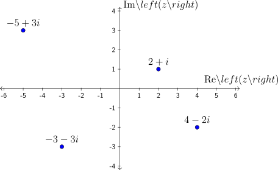 | = a | Im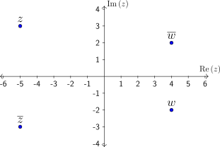 = b |
 In
Electrical Engineering the notation j = often used instead of i.
In
Electrical Engineering the notation j = often used instead of i.
Example 1.2
Examples of complex numbers include:
| 5 + i2, | 7 − i, | − 4 + 3i, | e, | 3, | iπ. |
The real and imaginary parts of the above numbers are as follows:
| z | 5 + i2 | 7 − i | −4 + 3i | e | 3 | iπ |
| Re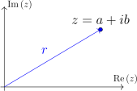 | 5 | 7 | -4 | e | 3 | 0 |
| Im | 2 | -1 | 3 | 0 | 0 | π |
Notes:
7 − i is the same as 7 + (−1)i.
i3 = 3i.
e = e + i0 and iπ = 0 + iπ
As for real numbers, we can apply some basic arithmetic operations to complex numbers.
Definition 1.3 Equality
Two complex numbers z = a + ib and w = c + id are equal, denoted z = w if a = c and b = d.
For example: We have 1 + 2i = 2i + 1 and 1 + 2i≠2 + 2i.
Basic operations on complex numbers behave the way we expect as per real numbers
Definition 1.4 Basic operations
Given complex numbers z = a + ib and w = c + id, we have the following operations:
Addition:
| z + w | = (a + ib) + (c + id) | ||
| = (a + c) + i(b + d) |
Subtraction:
| z − w | = (a + ib) − (c + id) | ||
| = (a − c) + i(b − d) |
Multiplication:
| z ⋅ w | = (a + ib) ⋅ (c + id) | ||
| = (ac − bd) + i(ad + bc) |
We can verify these operations by expanding the brackets and then regrouping by real and imaginary components.
Example 1.5
Take complex multiplication for example:
| (a + ib) ⋅ (c + id) | = ac + iad + ibc + i2bd | ||
| = ac + iad + ibc − bd | |||
| = (ac − bd) + i(ad + bc) |
where we used the identity i2 = −1.
Example 1.6
Addition and subtraction:
| (5 + 4i) + (2 − 3i) | = (5 + 2) + (4 − 3)i = 7 + i | ||
| (π + 2i) − (π + i) | = (π − π) + (2 − 1)i = i |
Multiplication:
| (1 − i)(2 + 3i) | = 2 + 3 + 3i − 2i = 5 + i. | ||
| (1 − i)2 = (1 − i)(1 − i) | = (1 − 1) + i(−1 − 1) = −2i | ||
| (1 + 2i)(1 − 2i) | = (1 + 4) + i(2 − 2) = 5. |
We can also combine operations together using our standard order of operations
| (1 + i) | = (1 + i)(14 + 5i) = 9 + 19i. |
You’ll notice that division is not on this list yet. That’s because division is a bit more complicated (as for real
numbers)1 .
Recall from real numbers, we can convert division into multiplication by using the reciprocal. That is
 = a ×. For complex numbers we will use a similar approach. Given z = a + ib, we will attempt to
find a number w = p + iq such that w = 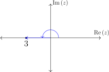.
= a ×. For complex numbers we will use a similar approach. Given z = a + ib, we will attempt to
find a number w = p + iq such that w = 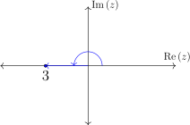.
Before we get to that, we will introduce a new concept that will be useful
Definition 1.7 Complex conjugate
Given a complex number z = a + ib, the complex conjugate, z, is defined to be
|
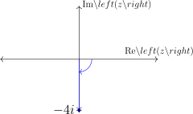
|
In particular, we have Re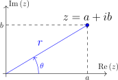 = Re and Im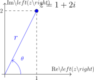 = −Im.
and Im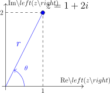 = −Im.
Example 1.8
If z = 1 + i then z = 1 − i.
If z = 2i, then z = −2i.
If z = 4, then z = 4.
Note that if r is a real number (i.e. Im = 0), then r = r. This is why the conjugate does not make an appearance prior to our study of complex numbers.
Equipped with the complex conjugate, we can now rewrite the reciprocal of a complex number.
Example 1.9
Let z = a + ib. We can rewrite 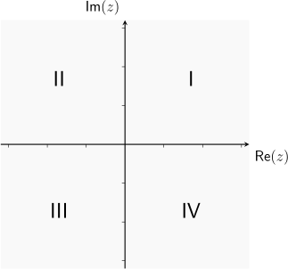 by multiplying by 1 in a specific way.
| = 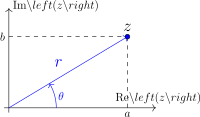 | ||||||
=  ⋅ ⋅ | Complex Conjugate | |||||
| = | ||||||
| = 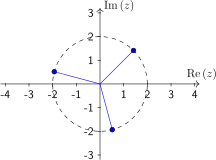 | ||||||
| = + i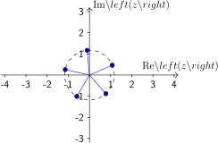 |
In particular, if w = 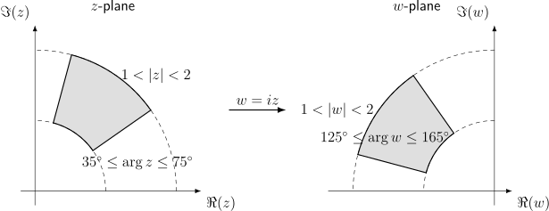, we can express w = p + iq with
| p | = | q = | 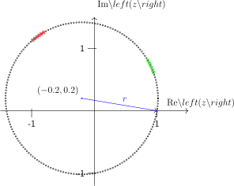 |
The essence of this process is to transfer the imaginary number i from the denominator to the numerator. The denominator a2 + b2 is derived from the difference of squares and is guaranteed to be a real number. This process is often referred to as realising the denominator.
Further, the denominator tells us that zz = a2 + b2 which will be a real number.
Exercise 1.10
Let z = 1 + 2i. Express as a complex number w = c + id.
Solution:
Using the derivation we had above:
 | = | ||
=  + i + i | |||
| = + i |
We can also fill in the details as we go.
Exercise 1.11
Express in the form a + ib.
Solution:
The complex conjugate of 3 + 4i is 3 − 4i. Hence, we have
 | = ⋅ | ||
| = | |||
| = −i |
Exercise 1.12
Write  in the form a + ib.
in the form a + ib.
Solution:
|
|
This property = −i is a particularly useful one to remember.
With this in mind, we can now look at complex division
Example 1.14
The algebraic operations for complex numbers satisfy the same properties as the corresponding operations for real numbers. For example
| z1(z2 + z3) | = z1z2 + z1z3 | ||
| z1z2 | = z2z1 | ||
| z−3 | = |
We can extend the definition of i to take the square root of any negative number.
Example 1.15
If we have d > 0, then −d < 0, so we have
 |
Exercise 1.16
Solve the equation z2 + 16 = 0
Solution:
We isolate z by rewriting
| z2 + 16 | = 0 | ||
| z2 | = −16 | ||
| z | = ± | ||
| z | = ± | ||
| z | = ±4 | ||
| z | = ±4i. |
With complex numbers, we can revisit our knowledge of solving quadratics using the quadratic formula.
Theorem 1.17 Quadratic formula
Given the quadratic equation az2 + bz + c = 0, with real constants a,b,c. The solutions z are given by
 |
The quantity under the square root Δ = b2 − 4ac is called the discriminant. In particular:
If Δ > 0, the two solutions are real and distinct.
If Δ = 0, the two solutions are real and overlap.
If Δ < 0, the two solutions are complex and distinct.
The first two cases for the discriminant should be familiar. In the case for complex solutions z1,z2, we have the additional property that z1 = z2. That is the two complex solutions form a complex conjugate pair.
Exercise 1.18
Solve the equation z2 + 2z + 2 = 0
Solution:
The quadratic formula gives
| z | = , | ||
=  | |||
=  | |||
| = −1 ± = −1 ± i. |
Thus the solutions are z = −1 + i and z = −1 − i.
Exercise 1.19
Find the 2 solutions z1,z2 of the equation z2 + 14z + 58 = 0, and check that z 1 = z2.
Solution:
From the quadratic formula
| z | = | ||
| = | |||
| = = −7 ± 3i |
The two solutions are z1 = −7 + 3i and z2 = −7 − 3i. We also have z1 = −7 − 3i = z2.
Operations on complex numbers lend themselves very nicely to visual interpretations. To construct a visual representation of complex numbers, we start with the real number line.
Example 1.20
We can think of real numbers as points along the real number line.

Inequalities in real numbers translates to intervals along the real number line. For example:
The interval −1 < x ≤ 3 translate too
The interval 1 ≤ x < 6 translates to
We can extend this idea to complex numbers. Since two pieces of data is required to describe a complex number (a real part and an imaginary part). We can use those two data as co-ordinates on the plane. The complex number z = a + ib is represented by the point with co-ordinates (a,b) in the plane. Complex numbers written in z = a + ib is often called Cartesian form for its connection with coordinates in the complex plane.
This is known as an Argand Diagram or the complex plane. The Argand diagram provides a simple visual way of representing many of the key properties of complex numbers.
Example 1.21
Let z be a complex number. The Argand diagram of z , the complex conjugate of z, is the point obtained by reflection in the real axis.
Exercise 1.22
Plot all complex numbers of the form z = a + 3i for real numbers a
Solution:
The imaginary part of z is always 3 while the real part can vary. This leads to the following picture:

Solution:
Recall that a2 + b2 = 9 is the equation of a circle with radius 3. Thus a complex number a + ib satisfies a2 + b2 = 9 if it lies on this circle.
Each point on the circle is a complex number satisfying the requirement.
Solution:
This is a retread of the previous question since z = a2 + b2 = 9 is the equation of a circle with radius 3.
Now that we have a visual representation of complex numbers, we can ask new questions about them. For example, what is the size of a complex number. One way to define size is to take the distance between the number and the origin of the Argand diagram2 .
Using Pythagoras’ Theorem we get
| r2 | = a2 + b2 | r | = |
Definition 1.25 Modulus
The modulus of the complex number z = a + ib is denoted = and is defined by
=  = =  |
Exercise 1.26
If z = 3 − i calculate .
Solution:
Since z = a + ib with a = 3 and b = −1, we have
 | = = |
Exercise 1.27
Find the modulus of the following complex numbers
Solution:
Applying the theorem, we have
 = = 9
= = 9
 = = 1.
= = 1. Exercise 1.28
In the Argand diagram, draw the set of all complex numbers z with modulus = .
Solution:
A complex number z = a + ib has modulus = if = or a2 + b2 = 2 (See subsection 1.3).
Solution:
(Alternate) We know that the modulus of a complex number gives the distance to the origin. Thus we want all the points at distance from the origin. This again leads to the circle of radius (See subsection 1.3).
Solution:
Since the modulus is the distance to the origin the set consists of all those complex numbers which are at a distance between 1 and 2 from the origin. This gives the area shown below.
Notice the difference between the inner and outer boundaries. A solid line indicates that the boundary is included and a dashed line indicates that the boundary is not included3 .
To uniquely define a complex number with the modulus, we would need another piece of information. This second piece of information is called the argument.
Definition 1.30 (Principal) Argument
Let z be a complex number. The principal argument of z, denoted as Arg, is the angle 𝜃 in radians that z makes with the positive real axis in a counter-clockwise direction, chosen so that −π < 𝜃 ≤ π.
A point z in the Argand diagram determines an angle 𝜃 with the positive real axis.

The choice of 𝜃 such that −π < 𝜃 ≤ π means:
0 < 𝜃 ≤ π if z is above the real axis
−π < 𝜃 < 0 if z is below the real axis
Example 1.31
The most straight forward method of determining the argument is to draw the diagram.


Based on the diagrams, we have:
| Arg | = 0 | Arg | = π | ||||
| Arg | = | Arg | = − |
A similar approach would show that
Arg | = | Arg | = | ||||
Arg | = − | Arg | = − |
Example 1.32
We can use our knowledge of coordinate axes to determine:
Arg | = 0 | Arg | = | ||||
| Arg | = π | Arg | = − |
Further, we can use the special triangles to get
| Arg | = | Arg | =  |
These are all cases we can obtain the angles by drawing and using our experience with simple triangles. We can extend this and develop a more systematic method to use for more general complex numbers
Example 1.33
Suppose z = a + ib is a complex number which determines an angle 𝜃 with the real axis.
We can use our knowledge of trigonometry to get that
|
|
In order words, we can determine the argument 𝜃 from the Cartesian form.
In the case where a = 0, we are on the imaginary axis and can resolve the angle using more simple methods.
Exercise 1.34
Find Arg.
Solution:
We start by plotting a diagram
Using the above formula we know that tan(𝜃) = = 2. Using a calculator we get
|
|
to 3 decimal places (in radians!).
Even though we have tan(𝜃) = , we have cases where 𝜃≠ arctan .
Example 1.35
Suppose we want to find Arg using the same method. We will that = = 2,
which will give 𝜃 = arctan(2) = 1.107. However this is clearly not correct based on our previous
exercise. That is w = −1 − 2i and z = 1 + 2i are not in the same direction.
using the same method. We will that = = 2,
which will give 𝜃 = arctan(2) = 1.107. However this is clearly not correct based on our previous
exercise. That is w = −1 − 2i and z = 1 + 2i are not in the same direction.
The reason for this is because the inverse tangent function produces values − < 𝜃 < . In other words, the it assumes a > 0. If we want to obtain the argument for the complex number in the exact opposite direction, we have to account for it by adding or subtracting π
Example 1.36
Consider the numbers z = 1 + i and w = −1 − i. We know Arg = and Arg = −
and tan
= and Arg = −
and tan  = tan = 1. If we plot a diagram, we see why this is the case and how we
can resolve it.
= tan = 1. If we plot a diagram, we see why this is the case and how we
can resolve it.
Be sure to have your calculator set to radians mode
Summary 1.37
To find 𝜃 = Arg ,
,

The four quadrants of the complex plane are usually numbered anti-clockwise.
Solution:
Starting with the picture:
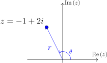
We see that 0 < Arg < π. Using the above formula we know that tan(𝜃) =  = −2.
Using a calculator we get
= −2.
Using a calculator we get
|
|
to 3 decimal places. Since this is not in the correct range for 𝜃. Adding π gives
|
|
Exercise 1.39
Find Arg .
.
Solution:
We see that − < Arg < 0, so the inverse tangent value should give us the right
argument. This gives:
< 0, so the inverse tangent value should give us the right
argument. This gives:
|
|
Now that we have we can determine the modulus and argument of a complex number, we can try to reverse the process.
Definition 1.40 Polar form
Let z be a complex number with modulus r and principal argument 𝜃. The polar form of z is given by
| z | = r cos(𝜃) + ir sin(𝜃) | ||
| = r |
We can verify this by looking at the picture and applying a bit of trigonometry.
From the picture, we see that the base a = r cos(𝜃) and height b = r sin(𝜃). Hence, we have
 |
Exercise 1.41
Suppose = 2 and Arg =  . Write z in polar form.
. Write z in polar form.
Solution:
Set r =  = 2 and 𝜃 = Arg
= 2 and 𝜃 = Arg  = . Then
= . Then
| z | = r | ||
| = 2 |
If we wished to convert it to Cartesian form, we can further simplify
| z | = 2 | ||
| = 2 | |||
| = 1 + i |
In general, if we want to write a complex number in polar form, we:
 |
We will see in the next subsection that we can also write this as z = r ei𝜃.
Solution:
First we calculate the modulus and principal argument.
Modulus: = =  .
.
Principal Argument: Arg = arctan  = . Since z is in the first quadrant, the
argument does not need altering.
= . Since z is in the first quadrant, the
argument does not need altering.
Thus the polar form of z = 1 + i is
|
|
Exercise 1.43
Write z = −1 + 2i in polar form.
Solution:
First we calculate the modulus and principal argument.
Modulus: = =  .
.
Principal Argument: Arg = arctan = −1.107. Since z is in the upper-left
quadrant, we need to alter the argument (see subsection 1.4) to get Arg = 2.034
= 2.034
Thus the polar form of z = −1 + 2i is
|
|
The introduction of complex numbers connects two key areas of mathematics: Trigonometry and the exponential. It is possible to write a Maclaurin series for the exponential
 |
As it turns out, the exponential can be extended to complex numbers in the analogous way.
Definition 1.44 Complex exponential
For a complex number z, the complex exponential is defined to be:
|
|
It is not at all obvious, but it is a fact that the infinite summation results in something finite for all complex z so long as |z| < ∞.
If we consider the complex number z = i𝜃 for an angle 𝜃, we get:
| ei𝜃 | = 1 +  + + + = ∑
n=0∞ + + + = ∑
n=0∞ |
By resolving the powers of i, we get
| ei𝜃 | = 1 + +  + +  + +  + + + +  | ||
= 1 + i𝜃 − − + − +  + +  + +  | |||
=  + i + i |
Recalling the Maclaurin series for sin(x) and cos(x) , we see that the two summations give:
| ei𝜃 | = cos(𝜃) + i sin(𝜃) |
This gives a fundamental result in complex numbers
Theorem 1.45 Euler’s Formula
For any angle 𝜃, we have
|
|
In particular, if 𝜃 = π, we have the famous equation4
|
|
Example 1.46
With Euler’s formula, we have
| ei1 | = cos(1) + i sin(1). | ||
| ei | = cos + i sin = 0 + 1i = i. |
Using Euler’s formula we can get a new and very useful representation for complex numbers in polar form.
Definition 1.47 Exponential form
The exponential form of the complex number z with modulus r and argument 𝜃 is written as
 |
We derive this form by applying Euler’s Formula to the polar form
|
|
To write a complex number z in exponential form:
Exercise 1.48
Write z = 1 + i in exponential form.
Solution:
Exercise 1.49
? Write −i and −1 in exponential form.
Now that we have shown how to convert a complex number from Cartesian form a + ib to exponential form rei𝜃, we can go in the reverse direction.
Exercise 1.50
Write the complex number z = 2ei in Cartesian form a + ib.
in Cartesian form a + ib.
Solution:
Using Euler’s formula, we have
| z | = 2ei | ||
| = 2 | |||
= 2 | |||
| = + i |
Exercise 1.51
Let z = 5 + 4i. Write ez in the form a + ib.
Solution:
We have (to 2 decimal point)
| e5+4i | = e5e4i | ||
| = e5 | |||
| = e5 cos(4) + ie5 sin(4) | |||
| ≈−97.01 − 112.32i |
Recall that multiplication and division of complex numbers can be quite an involved process (See subsection 1.1). However, we can utilise properties of the exponential function (and hence the exponential form) help simplify this process.
Let z and w be complex numbers. Then we have:
| ez ⋅ ew | = ez+w | = ez−w |
We can express this as:
Theorem 1.52 Multiplication and division in exponential form
Let z = rei𝜃 and w = seiϕ be complex numbers in exponential form
| z ⋅ w | = (r ⋅ s)ei(𝜃+ϕ) | = ei(𝜃−ϕ). |
Converting the right-hand side to polar form gives:
| z ⋅ w | = (r ⋅ s) | ||
 | = . |
Exercise 1.53
Let z = 2e , and w = e−
. Find z ⋅ w and
, and w = e−
. Find z ⋅ w and  .
.
Solution:
Reading off the complex numbers, we get r = 2,s = 1,𝜃 = ,ϕ = −. So we get:
| z ⋅ w | = (2 ⋅ 1) | ||
| = 2 = 2 | |||
| = | |||
| = = 2i. |
Complex exponentials are extremely useful when dealing with multiplication and division5 . However, its usefulness extends beyond simple arithmetic. For the rest of this section, we will take a (very brief) look into areas where complex exponentials might be useful.
Euler’s formula gives us an alternative way to write the sine and cosine functions which is used very widely in science and engineering. In particular, we have
| ei𝜃 + e−i𝜃 | =  + +  = 2 cos(𝜃) = 2 cos(𝜃) | ||
| ei𝜃 − e−i𝜃 | = cos(𝜃) + i sin(𝜃) − = 2i sin(𝜃) = 2i sin(𝜃) |
We can rearrange to get the following:
Theorem 1.54 Trigonometric functions in exponential forms
We can express the trigonometric functions:
| cos(𝜃) | =  , , | ||
| sin(𝜃) | =  . . |
Notice that these relations are very similar to the ones for the hyperbolic trigonometric functions (cosh and sinh). The introduction of complex numbers illustrates why they share so many similar identities.
Exercise 1.55
? Use complex exponentials to show that 2 sin(𝜃) cos(𝜃) = sin(2𝜃).
The complex exponential is also commonly involved in the solution of differential equations, particularly in cases where solutions oscillate (like in AC electronics, quantum mechanics, etc.). It satisfies the same rules of differentiation and integration as any other exponential function6 .
Example 1.56
For derivatives involving i, we have
| eiωx | = iωeiωx | ||
| eiωx | = (iω)2eiωx = −ω2eiωx |
Integration works in a similar way
| ∫ eiωxdx | = + C |
Exercise 1.57
? Verify that y(t) = Ce−i4t is a solution of y′′ = −16y.
Now that we have seen the exponential in complex numbers, it is natural to question how logarithm
behave in complex numbers? The short answer is that logarithms are very complicated beasts, with
properties far beyond this introductory course.  Use with caution!
Use with caution!
Suppose we “naively” apply logarithms on complex numbers using the rules of real numbers, we have the following.
Example 1.58
Let z = rei𝜃 be a complex number in exponential form. We can apply the logarithm as
| Log(z) | = Log | ||
| = Log + Log | |||
| = Log + i𝜃 | |||
| = Log + iArg |
Exercise 1.59
Let z = 42ei . Find Log(z).
Solution:
Since |z| = 42 and Arg = , we have Log(z) = Log(42) + i.
Whilst this approach is not wrong, it also does not capture the entire picture7 .
Through repeated application of subsection 1.5, we can extend exponential multiplication to powers of exponentials. We start with
|
|
which can be extended to any integer n giving
|
|
If we convert both sides of the above equation into polar form, we obtain a very important result.
Theorem 1.60 De Moivre’s Theorem
Let n be an integer. For an angle 𝜃, we have
|
|
For a complex number z = rei𝜃 in exponential form, the following are equivalent
| zn | = rnein𝜃 = rn | ||
= rn n = rn n = rn n n |
De Moivre’s Theorem is particularly useful when dealing with powers of complex numbers.
Exercise 1.61
Let z = (1 + i) and compute z8
Solution:
We first write z in expontial form as
|
|
This gives
| z8 | = (1 + i)8 | ||
| = 8 | |||
| = 8ei | |||
| = 16ei2π = 16 |
We can reach the same solution by multiplying 8 times. But this would be rather tedious and not recommended.
Exercise 1.62
Compute (−1 + 2i)10
Solution:
Putting z = (−1 + 2i) in exponential form, we find
|
|
Thus we have
|
|
De Moivre’s theorem is also useful for computing roots of complex numbers.
Theorem 1.63 Roots of complex numbers
Let z = r ei𝜃 be a complex number in exponential form and n be a positive integer. There are precisely n different n-th roots of z and they are given by
| z | = r ei
ei
| for k = 0, 1,…,n − 1 |
where r is the positive n-th root of r.
Example 1.64
For square roots of z = rei𝜃 we have n = 2. So the two roots w 1,w2 are given by
| w1 | = ei =
=  ei ei
| ||
| w2 | = ei
=  ei ei
|
and is the positive square root of r.
For cube roots of z = rei𝜃 we have n = 3. So the three roots w 1,w2,w3 are given by
| w1 | = ei
=  ei ei
| |||||
| w2 | = ei = ei w3 | =  ei
= ei ei
= ei
|
and is the positive cubed root of r.
Exercise 1.65
Let z = 9ei . Find the two values of and verify your answer.
. Find the two values of and verify your answer.
Solution:
Apply subsection 1.6 with r = 9, 𝜃 =  and n = 2 gives
and n = 2 gives
| w1 | =  ei ei
| ||
= 3ei
| |||
| w2 | = ei | ||
| = 3ei |
We can verify the solutions by squaring the answer
| (w1)2 | = 2 | ||
= 9e2i
| |||
= 9ei
| |||
| = z | |||
| (w2)2 | = 2 | ||
= 9e2i
| |||
= 9ei
| |||
| = 9ei ei2π | |||
| = z ⋅ 1 = z |
Exercise 1.66
? Find the 5-th roots of z = −1+2i. Confirm your answers by plotting it on the complex plane.
Example 1.67
Plotting the n-th roots of a complex number z gives some interesting patterns.
As a final application of De Moivre’s theorem, we can use it to derive some useful trigonometric identities.
Example 1.68
Consider the case of n = 2 in De Moivre’s Theorem. We get
| cos(2𝜃) + i sin(2𝜃) | = (cos(𝜃) + i sin(𝜃))2 | |||||
| = cos 2(𝜃) − sin 2(𝜃) + i2 sin(𝜃) cos(𝜃) | Expanding |
In particular, if we equate the real and imaginary parts of the equation, we recover a couple of well-known identities
| cos(2𝜃) | = cos 2(𝜃) − sin 2(𝜃) | ||
| sin(2𝜃) | = 2 sin(𝜃) cos(𝜃) |
The theorem gives us two trigonometric identities at the same time.
Exercise 1.69
? Prove the identity sin(3𝜃) = 3 cos 2(𝜃) sin(𝜃) − sin 3(𝜃) using De Moivre’s Theorem.
We have seen that for any real angle 𝜃, Euler’s formula gives
|
|
which can be used to write as
| cos(𝜃) | =  , , | ||
| sin(𝜃) | =  . . |
This can, in turn be used to write
| cos(z) | =  , , | ||
| sin(z) | = . |
for complex arguments z.
If we expand the RHS using z = x + iy, we find
and

This is also true for cosh(z), sinh(z) with complex arguments z, i.e.
| cosh(z) | =  , , | ||
| sinh(z) | = . |
with complex arguments z = x + iy.
Example 1.70
Expand for  .
.
Since
| cosh(z) | =  = = | ||
| = | |||
| = | |||
| = cosh(x) cos(y) + i sinh(x) sin(y) |
The exponential function can be defined for complex arguments
which shows that
The Logarithm can also be defined for complex arguments

which can be written as
You might worry that Arg, (i.e. arctan), might lead to complications in the definition of Log for complex arguments - it does! Disentangling these is for another course.
A nice geometrical way to picture complex functions is to think of them as Complex Mappings. A complex function w = u + iv = f(z) takes the point z = x + iy in the complex plane and maps it to u + iv.
Example 1.71
Show the effect of considering w = iz as a complex map that acts on the segment 1 ≤|z|≤ 2, 35∘ ≤ arg z ≤ 75∘ in the complex z plane.
If we use polar form, i = ei , so it represents a (positive, anticlockwise) rotation by π∕2 radians.
, so it represents a (positive, anticlockwise) rotation by π∕2 radians.
I have sneakily used an alternative notation in the figures for Re(z), namely ℜ(z), and Im(z), namely ℑ(z).
Example 1.72
Show the effect of considering w = z2 as a complex map that acts on the segment 1 ≤|z|≤ 2, 35∘ ≤ arg z ≤ 75∘ in the complex z plane.
Again, polar form is useful. If z = rei𝜃, then w = r2e2i𝜃.

Example 1.73
We can use a complex function to convert a circle (with certain properties) to an aerofoil shape. Each dot on the left plot (the z values) is connected to one on the right (the w values) by the formula
The highlighted circles and diamonds show where their z values end up on the w value plot. Note that the circle in the z plane is slightly off-centre.
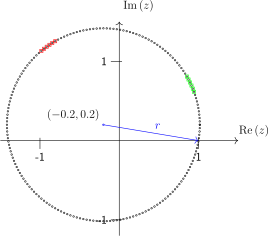
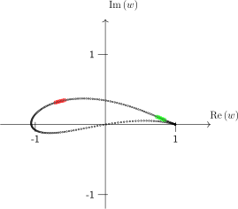
in this example is a complex function. The argument is a complex number and the function returns a complex number .
Let us pick apart  in Cartesian form.
in Cartesian form.
| w(z) | =   = = | ||
=  | |||
=   |
We can see that the complex function may be written using two real-valued functions of
where
This is true in general.
Example 1.74
Let the initial circle now be centred on the origin with radius R, i.e. with .
What is  ?
?
Parametrize it by

Then
| w(z) | =  = =  | ||
| = (R + ) cos 𝜃 + i (R −) sin 𝜃. |
Writing , we have
Eliminating gives
Hence the image of the circle under  is an ellipse centered at the
origin, with semiaxes
is an ellipse centered at the
origin, with semiaxes
In the special case , the ellipse degenerates to the line segment.
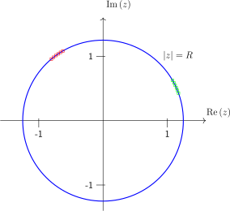
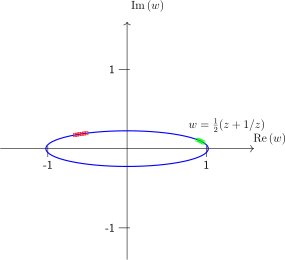
Exercise 1.75
Consider the quadratic map, f(z) = z2 + c where c = a + ib (with a,b real) is a complex constant.
What is f(z) when written in terms of real functions g,h. i.e. f(z) = f(x + iy) = g(x,y) + ih(x,y)?
Solution:
Substitute z = x + iy into f(z) = z2 + c and gather the real and imaginary parts:
hence g(x,y) = x2 − y2 + a and h(x,y) = 2xy + b
One of the most striking uses of complex numbers is in complex dynamics, where we repeatedly apply a map

starting from some initial value . The resulting sequence is called the orbit of .
Even very simple choices of  can produce complicated behaviour: orbits may converge to a fixed
point, fall into a periodic cycle, or escape to infinity.
can produce complicated behaviour: orbits may converge to a fixed
point, fall into a periodic cycle, or escape to infinity.
We have just encountered the quadratic map

where is a complex parameter. A useful practical fact is the escape radius: if at some step
 (when ), then the orbit will diverge to infinity (so we do not need to keep
iterating).
(when ), then the orbit will diverge to infinity (so we do not need to keep
iterating).
Example 1.76
If we consider a few iterates in the complex plane: Take and start at . The first few iterates are

and then the orbit returns close to  and
and  again.
again.
Example 1.77
Julia sets (bounded starting points): Fix . The filled Julia set is the set of starting
values  whose orbits under
whose orbits under  stay bounded. (The Julia set is the
boundary of .) The picture below is a coarse “escape-time” plot for : points
stay bounded. (The Julia set is the
boundary of .) The picture below is a coarse “escape-time” plot for : points  that do not escape after a fixed number of iterations (200) are drawn as yellow dots.
that do not escape after a fixed number of iterations (200) are drawn as yellow dots.

Example 1.78
The Mandelbrot set (bounded parameters):
Instead of fixing  and varying , we can fix the starting point
and varying , we can fix the starting point  and vary the
parameter
and vary the
parameter  . The Mandelbrot set is the set of parameters for which the orbit of
. The Mandelbrot set is the set of parameters for which the orbit of
 under remains bounded. The plot below is again an escape-time picture
(very low resolution), now in the
under remains bounded. The plot below is again an escape-time picture
(very low resolution), now in the  -plane.
-plane.

Complex numbers extend the real numbers by adjoining a new unit i with i2 = −1. Quaternions extend the complex numbers further by adjoining three imaginary units.
Quaternions were introduced by the Irish mathematician William Rowan Hamilton in 1843 as a way to extend complex numbers to describe rotations in three dimensions. After years of trying (and failing) to build a consistent “three–dimensional complex arithmetic”, Hamilton realised that the key was to move to four components and to accept that multiplication need not commute. On 16th October 1843, while walking in Dublin, he famously carved the fundamental relations
 |
into the stone of Brougham Bridge.

Quaternions quickly attracted attention in 19th-century mathematical physics and geometry, but they were later overshadowed in many applications by the vector calculus of Gibbs and Heaviside. In the late 20th century they saw a major revival in engineering and computing—especially in robotics, aerospace, and computer graphics—because unit quaternions provide a numerically stable and efficient way to represent 3D rotations without the singularities that can occur with Euler angles, which appear when using vectors.
Definition 2.1 Quaternion
A quaternion is an expression of the form
|
|
where a,b,c,d ∈ ℝ and the symbols i,j,k satisfy
|
|
The set of all quaternions is denoted ℍ.
From the defining relations one can derive the multiplication rules
| ⋅ | i | j | k |
| i | −1 | k | −j |
| j | −k | −1 | i |
| k | j | −i | −1 |
Quaternion multiplication is not commutative. For example,
 |
Definition 2.2 Scalar and vector parts
Write a quaternion as
 |
We call a the scalar part of q and v the vector part.
Addition and subtraction are componentwise (exactly as for complex numbers):
|
|
Multiplication is defined using distributivity together with the table above.
Example 2.3
Compute (1 + i)(1 + j).
| (1 + i)(1 + j) | = 1 + j + i + ij | ||
| = 1 + i + j + k. |
If we swap the factors,
| (1 + j)(1 + i) | = 1 + i + j + ji | ||
| = 1 + i + j −k, |
so the order matters.
Quaternions have an analogue of complex conjugation.
Definition 2.4 Quaternion conjugate
For q = a + bi + cj + dk, the conjugate is
|
|
Definition 2.5 Norm
The norm of q is defined by
 |
Example 2.6
Let q = 2 − i + 2j + k. Then
| q | = 2 + i − 2j −k, | ||
| ∥q∥ | = =  . . |
Just like complex numbers, the norm is useful for division.
Theorem 2.7 Inverse of a nonzero quaternion
If q≠0, then q has a multiplicative inverse
|
|
Example 2.8
Find the inverse of q = 1 + i + j + k.
| q | = 1 −i −j −k, | ||
| ∥q∥2 | = 12 + 12 + 12 + 12 = 4, | ||
| q−1 | =  (1 −i −j −k). (1 −i −j −k). |
 Because multiplication is not commutative, one must distinguish between left and right division in more
advanced settings. In this course we will only divide by placing the inverse on the right:
p∕q := pq−1.
Because multiplication is not commutative, one must distinguish between left and right division in more
advanced settings. In this course we will only divide by placing the inverse on the right:
p∕q := pq−1.
A key application of quaternions is the description of rotations in ℝ3.
Definition 2.9 Pure imaginary quaternion
A quaternion with zero scalar part,
|
|
is called pure imaginary. We identify it with the vector (b,c,d) ∈ ℝ3.
Definition 2.10 Unit quaternion
A quaternion q with ∥q∥ = 1 is called a unit quaternion.
Any rotation by angle 𝜃 about a unit axis n ∈ ℝ3 can be encoded by the unit quaternion
 |
Given a vector v ∈ ℝ3 (viewed as a pure imaginary quaternion), the rotated vector is
|
|
Example 2.11
Rotate (1, 0, 0) by 90∘ about the z–axis.
The axis is n = (0, 0, 1) and 𝜃 = π∕2, so
 |
Let v = i (since (1, 0, 0) corresponds to i). Then
| v′ | = q iq−1 =  i i | ||
=  = =  | |||
| = j. |
Thus (1, 0, 0) rotates to (0, 1, 0), as expected.
Exercise 2.12
Use the multiplication table to compute ik and ki. What do you notice?
Solution:
From the table, ik = −j and ki = j. They differ by a minus sign, illustrating non-commutativity.
Exercise 2.13
Let q = 3 − 2i + j. Compute q, ∥q∥, and q−1.
Solution:
We have q = 3 + 2i − j and
 |
Hence
 |
Exercise 2.14
Let n = (1, 0, 0) and 𝜃 = π. Write down the unit quaternion q describing rotation by π about the x–axis, and compute q jq−1.
Solution:
Here q = cos(π∕2) + sin(π∕2) i = i and q−1 = q = −i. Then
 |
So the y–axis is sent to −y, as expected for a 180∘ rotation about the x–axis.
We briefly recall some facts about vectors in ℝ2. Intuitively, a vector of ℝ2 can be thought as an arrow encoding a length and a direction. A vector however does not have an origin, so one may draw many arrows in the plane corresponding to the same vector:
|
|
One may identify the set of all vectors in ℝ2 with the set of points of the plane ℝ2, by associating to each point of the plane the vector from the origin to that point. Under this identification, the origin corresponds to a vector called the null vector and denoted 0.
Definition 3.1
Each point and thus each vector v ∈ℝ2 can be denoted by a pair of real numbers (thus the notation ℝ2): the horizontal displacement and the vertical displacement. Such a vector is denoted by the 2 × 1 matrix
|
|
|
|
It is a very useful convention to write vectors vertically, i.e. as 2 × 1 matrices. For typesetting reasons however, we often write that vector as v = (v1,v2)T , i.e. as a 1 × 2 matrix instead.
We have the following rules for adding two vectors v = (v1,v2)T and w = (w 1,w2)T and for multiplying a vector by a number λ ∈ℝ (called a scalar):
|
|
|
|
With our convention, the null vector is the vector with coordinates (0, 0)T . Note that if we multiply a vector by 0, we obtain the null vector: 0v = 0 for all v ∈ℝ2.
Definition 3.2
Most of the notions introduced on ℝ2 straightforwardly extend to ℝ3. A point in the Euclidean dimensions encodes a vector v ∈ ℝ3, i.e. an arrow from the origin 0 to that point. We describe the vector v by a 3 × 1 matrix
or sometimes as a 1 × 3 matrix v = (v1,v2,v3)T for typesetting reasons.
We can add vectors and multiply them by scalars as before:
 |
The generalisation to ℝn should now be clear.
Definition 3.3
We define:
|
|
An element of ℝn is called a vector (of ℝn), and is identified with an n × 1 matrix.
Definition 3.4
For vectors x,y ∈ℝn and a scalar λ ∈ℝ, we define the following operations on vectors:
addition: + :=  ,
,
multiplication by a scalar: λ := .
From a given family of vectors, one can construct new vectors using additions and multiplication scalars.
Definition 3.5
Let v1,…,vk ∈ℝn. A linear combination of v 1,…,vk is a vector of the form

Example 3.6
The vector ∈ℝ2 is a linear combination of  and , since
and , since
Exercise 3.7
Let
Solution:
Also
The first gives λ = 1 while the second gives λ = , which is impossible. Hence there is no λ with v + λw = 0.
Writing a vector as a linear combination of other vectors can be thought of as ‘decomposing’ that vector. Given a family of vectors v1,…,vk of ℝn, we will study the following questions:
Can every vector of ℝn be written as a linear combination of v 1,…,vk?
If not, which vectors of ℝn can be written as a linear combination of v 1,…,vk?
In how many ways can a vector of ℝn be written as a linear combination of v 1,…,vk?
The standard basis of ℝn. There is already a standard family of vectors for which these questions have a simple answer.
Definition 3.8
We introduce the following vectors of ℝn:
This family of vectors is generally called the standard basis of ℝn.
Theorem 3.9
Every vector x = (x1,…,xn)T of ℝn can be written in a unique way as a linear combination of e1,…,en, namely:
Example 3.10
The vector ∈ ℝ3 can be written as a linear combination of the standard basis vectors for ℝ3, e 1,e2,e3 since

Note that it is also possible to use a non-standard basis to describe the vectors, as in the following example.
Example 3.11
The vector ∈ℝ3 from the previous example can also be written as a linear combination of the non-standard basis vectors for ℝ3, e 1,f2,f3 where
since

Exercise 3.12
? Can I use  along with
along with  and as basis for ℝ3
?
and as basis for ℝ3
?
Consider a system of linear equations whose associated matrix is an m × n matrix of the form:

For x =  a vector of ℝn, we define :
a vector of ℝn, we define :

In other words, for 1 ≤ i ≤ m, the i-th component of Ax is (Ax)i = ∑ 1≤k≤naikxk.
Consider the following system of linear equations:
|
|
Let A be the matrix associated to this system, and let y = ∈ℝn. A vector x = is solution of that system if and only we have:
Solving that system is thus equivalent to the following problem:
Is y ∈ℝn a linear combination of col 1(A),…, coln(A)?
Thus, a m × n matrix is not ‘just a bunch of numbers’, but we can use it to associate to a vector x ∈ℝn a new vector Ax ∈ℝm. In other words, we can associate to any m × n matrix a map from ℝn to ℝm.
Given a family v1,…,vk of vectors of ℝn, we start by considering the questions: What vectors of ℝn can be obtained as a linear combination of v1,…,vk? We first introduce some definition:
Definition 3.13
The span of a family v1,…,vk of vectors of ℝn is the set span(v 1,…,vk) of vectors of ℝn that can be written as a linear combination of v1,…,vk. In other words,
Checking whether a given vector is a linear combination of a family of vectors is checked by solving a system of linear equations. Here is an example:
Example 3.14
Let us determine whether the vector (3, −4, 2)T is a linear combination of (1, 0, 2)T and (1, 1, 3)T . We have to solve the equation
|
|
with variables λ,κ ∈ℝ. Using coordinates, we express this as a system of linear equations, and perform Gaussian elimination:
From this echelon form, we see that the system has exactly one solution (all variables are pivot variables and no inconsistent line). We solve the resulting system by substitution, which yields κ = −4 and λ = 3 − κ = 7. Thus,
|
" class="math-display" /> |
Exercise 3.15 Linear combination test in ℝ3
Determine whether the vector is a linear combination of and  . If it
is, find scalars λ,κ ∈ℝ such that
. If it
is, find scalars λ,κ ∈ℝ such that
Solution:
We must solve
In coordinates this becomes the linear system
which is inconsistent.
Equivalently, we row-reduce the augmented matrix:
The last row represents 0λ + 0κ = 1, which is impossible. Hence the system has no
solution, so is not a linear combination of and  .
.
Since checking whether a given vector v is a linear combination of vectors v1,…,vk is checked by solving a system of linear equations, it follows that there is either no way to write v as a linear combination v1,…,vk (precisely when v is not in the span of v1,…,vk), exactly one way or infinitely many ways.
Theorem 3.16
Let u1,…,uk be a family of vectors of ℝn and consider V : = span(u 1,…,uk). We have the following:
0 ∈ V ,
For every x,y ∈ V , we also have x + y ∈ V .
For every x ∈ V and λ ∈ℝ, we also have λx ∈ V .
More generally, any linear combination of vectors of V is again in V .
Definition 3.17
A subset of ℝn containing the null vector and stable under linear combinations is called a subspace of ℝn.
The algebraic properties of spans of vectors mentioned above have a geometric counterpart: Spans of vectors, seen as subsets of ℝn, have a very simple shape: line or plane through the origin in ℝ3 for instance. More complicated shapes, such as spheres, hyperboloids, etc. can never be spans.
As an illustration, we now list the various possibilities for the span of two vectors of ℝ2. In particular, we see that such spans are geometrically very simple.
Theorem 3.18
The span of two vectors of ℝ2 is either:
{0},
a straight line through the origin,
all of ℝ2.
Proof. Consider two arbitrary vectors v = (v1,v2)T ,w = (w 1,w2)T . If v = w = 0, the span of v and w is just {0}. If they are collinear and for instance v is non-vanishing, then the span of v and w is the straight line parallel to v going through the origin.
If they are not collinear, then we now show that v and w span ℝ2. Let u = (a,b)T be an arbitrary vector of ℝ2. We want to write u as a linear combination of v and w. In other words, we want to find numbers λ,μ ∈ ℝ such that λv + μw = u. By taking coordinates, this yields the following equations:
 |
Here, the variables are λ and μ, and the coefficients u1,u2,v1,v2,w1,w2 are constants. We thus have a system of linear equations. We perform the following row operations:
Since v and w are not collinear, we have v1w2 − v2w1≠0, so we can find solutions λ and μ in terms of the other constants. Thus, there is a solution to our system of equations, so u is a linear combination of v and w. □
Definition 3.19
We say that a family v1,…,vk of vectors of ℝn spans ℝn (or is a spanning family of ℝn, or that ℝn is spanned by v 1,…,vk), if span(v1,…,vk) = ℝn, that is, if every vector of ℝn can be written as a linear combination of v1,…,vk.
Theorem 3.20
Let v1,…,vk be a spanning family of ℝn. Then k ≥ n. In other words, a spanning family of ℝn contains at least n vectors.
Proof. Given a vector b = (b1,…,bn)T of ℝn, we have to consider the equation
|
|
where λ1,…,λk are variables. Taking coordinates gives us a system of n equations (one for each coordinate of ℝn) with k variables. We can now perform Gaussian elimination to get a system in echelon form. We will now show that each row contains a pivot, which will be enough to conclude that k ≥ n: Since each pivot must be strictly to the right of the pivots of the previous rows, this means that there must be at least as many columns as rows in the associated matrix, hence k ≥ n.
If there was a row without a pivot, then the last row of the augmented matrix the echelon form would be of the form
|
|
where β is a non-trivial linear combination of b1,…,bn. Note that if β≠0, then we have a forbidden row, and the system has no solution. We can now choose specific values of b1,…,bn such that β≠0. This corresponds to an equation of the form
|
|
which also has no solution. Thus, the vector b = (b1,…,bn)T is not a linear combination of v 1,…,vn, hence these vectors do not form a spanning family. □
We now study family of vectors v1,…,vk ∈ℝn for which there is a unique way to write a given in the span as a linear combination of v1,…,vk.
Definition 3.21
A family of vectors of ℝn is linearly dependent if one of the vectors is a linear combination of the other vectors. Equivalently, a family of vectors v1,…,vk is linearly dependent if there exist scalars λ1,λk ∈ℝ not all zero such that
A family of vectors v1,…,vk is linearly independent if for every λ1,λk ∈ℝ, we have
A family of vectors v1,…,vk is linearly independent if and only if there is a unique way to write any vector of the span as a linear combination of v1,…,vk.
Determining whether vectors are linearly independent amounts to solving a system of linear equations, which we do using Gaussian elimination.
Theorem 3.22
To determine whether vectors v1,…,vk are linearly independent, one uses Gaussian elimination to find all solutions to the system
 |
If all variables c1,…,ck are pivot variables, this homogeneous system of linear equations has only the trivial solution c1 = c2 = … = ck = 0. In this case, v1,…vk are linearly independent. Otherwise, nontrivial solutions exist and the vectors are linearly dependent.
Let us consider some examples:
Example 3.23
We want to determine whether the vectors (2, 1, 1)T , (1, 2, 1)T , and (1, 1, 2)T are linearly independent. We need to study the equation
 |
with variables λ,κ,μ ∈ℝ. Taking coordinates, this leads to the system of linear equations:
 |
We use Gaussian elimination to solve this system. We get
 |
Thus, all the variables are pivot variables and the system is consistent as it is homogeneous, so the system has exactly one solution. Since the system has at least one solution, namely λ = κ = μ = 0, this must be the only solution. As a consequence, the vectors (2, 1, 1)T , (1, 2, 1)T , and (1, 1, 2)T are linearly independent.
Exercise 3.24 Linearly dependent vectors
Determine whether the vectors (1, 2, 3,−1)T , (2, 1, 3, 1)T and (4, 5, 9,−1)T are linearly dependent.
Solution:
We must find all solutions (c1 , c2 , c3 ) of the homogeneous system:
|
|
We reduce the associated system using Gaussian elimination:
 |
|
|
Not all the variables are pivot variables (c3 is a free variable) and therefore the system has infinitely many solutions, which implies that the vectors are linearly dependent. More precisely, if we rewrite it as a system of linear equations, we get
|
|
For instance, by setting α = 1 we obtain
|
|
We now study families of vectors such that every vector of ℝn can be written in a unique way as a linear combination of v1,…,vk. We have already seen one example of such a family, namely the standard basis of ℝn:
 |
This family of vectors is generally referred to as the standard basis of ℝn. This notion can be generalised as follows:
Definition 3.25
A basis of ℝn is a family of vectors v 1,…,vk such that every vector of ℝn can be written in a unique way as a linear combination of v1,…,vk. In other words, a family of vectors is a basis if and only if it is both spanning (existence of a linear combination) and linearly independent (uniqueness of a linear combination).
Theorem 3.26 A
basis of ℝn contains exactly n vectors. □
Theorem 3.27
Let u1,…,un be a family of exactly n vectors of ℝn. The following are equivalent:
u1,…,un is a basis of ℝn.
u1,…,un spans ℝn.
u1,…,un is linearly independent.
Note that (i) ⇒ (ii), (iii). Let us show that (ii) ⇒ (i). We want to show that u1,…,un is linearly independent. To that end, we try to solve the homogeneous system of equations λ1u1 + … + λnun = 0 by Gaussian elimination. Since we have n equations with n variables, either every variable is a pivot variable, or there exists a free variable. In the latter case, we can find a vector u of ℝn such that reducing the system of equations λ1v1 + … + λnvn = u would give a bottom row of the form
This would imply that the system associated to the equation λ1u1 + … + λnun = u is inconsistent, contradicting the fact that the family spans ℝn. Thus, every variable is a pivot variable, and we know the system has exactly one solution: (λ1,…,λn) = (0,…, 0).
Let us now show that (iii) ⇒ (i), using a similar strategy. We want to show that u1,…,un spans ℝn. To that end, we try to solve the system of equations λ1u1 + … + λnun = u, for some vector u of ℝn, by Gaussian elimination. Since we have n equations with n variables, either every variable is a pivot variable, or there exists a free variable. In the latter case, the system of equations λ1v1 + … + λnvn = 0 would have infinitely many solutions, contradicting the fact that the family is linearly independent. Thus, every variable is a pivot variable, which implies that the system of equations λ1u1 + … + λnun = u admits at least one solution.
The implication (iii) ⇒ (i) gives us a possible method to show that a given set of vectors forms a basis of ℝn. However, there is often a faster way to show that a given family of vectors forms a basis ofℝ n:
Theorem 3.28
Let v1,…,vn be a family of n vectors of ℝn, and let

be the associated matrix. Then:
This works because the determinant is calculating a volume (or area in 2 dimensions) defined by the vectors.
In ℝ2 the determinant gives the area of the parallelogram defined by a,b. If b is collinear with a the area is zero.

In ℝ3, on the other hand, three vectors a,b,c generically define a parallelepiped, as shown below. If one of the vectors is linearly dependent on the other two in will be coplanar with them and the parallelepiped will collapse to have zero volume. It is harder to picture in higher dimensions, but the idea is the same.

Example 3.29
Using a determinant to test for a basis of ℝ3 :
Let
Form the associated matrix with these vectors as columns:
Compute its determinant (expand along the first row, for example):
Hence
Therefore, by the theorem,
We can also use the determinant test when the vectors do not form a basis:
Example 3.30
Using a determinant to test for a basis of ℝ3 (an example where the vectors don’t form a basis).
Let

(Notice that  .)
.)
Form the associated matrix with these vectors as columns:
Compute its determinant (expand along the first row, for example):
Hence
Therefore, by the theorem,
(In fact they are linearly dependent since  .)
.)
In the previous chapter, we introduced the space ℝn of vectors. The key operations for vectors in ℝn are adding two vectors and multiplying a vector by a scalar. In this section, we will develop the general abstract framework allowing us to treat various examples of vector spaces in a uniform way.
To be able to treat various cases with a single mathematical framework, we now introduce the notion of an abstract vector space. This is the notion that makes rigorous this idea of ‘spaces of objects where one can add vectors and multiply them by a scalar’.
Definition 4.1
A real vector space is a set V (whose elements are called vectors) endowed with two operations:
an addition denoted + that associates to two vectors u,v ∈ V a vector u + v ∈ V ,
a multiplication by a scalar denoted ⋅ that associates to a vector v ∈ V and a scalar λ ∈ℝ a vector λ ⋅v ∈ V (or simply λv).
We further require that the following vector space axioms are satisfied:
null vector: There is an element 0 = 0V ∈ V , the zero or null vector, such that v + 0 = v for all v ∈ V .
opposite: For all v ∈ V , there is an element −v ∈ V such that v + (−v) = 0.
commutativity of the addition: v + w = w + v for all v,w ∈ V ,
associativity of the addition: (v + w) + u = v + (w + u) for all v,w,u ∈ V .
distribituvity of the scalar multiplication: a(v+w) = av+aw and (a+b)v = av+bv, a,b ∈ℝ, v,w ∈ V ,
associativity of the scalar multiplication: a(bv) = (ab)v, a,b ∈ℝ, v ∈ V ,
compatibility: 1 ⋅v = v.
This list of axioms (1)-(7) may seem long and technical. However, you should convince yourself that they encode the usual properties that one expects from addition and multiplication by a number for vectors, functions, etc. Moreover, the strength of this abstract framework is that, once we know that something is a vector space, we can treat objects of that space (functions, sequences, or more exotic objects) as if they were vectors, and use our geometric intuition to solve problems.
The space ℝn is a vector space for the addition and multiplication by a scalar introduced in the previous chapter. The null vector (0,…, 0)T satisfies axiom (1). The opposite of a vector (v1,…,vn)T is defined as (−v 1,…,−vn)T to satisfy axiom (2). One then checks that axioms (3)-(7) hold. Indeed, one has to check the equations coordinate by coordinate, and each of these equations then boils down to a standard rule about addition and multiplication of real numbers (commutativity of addition, distributivity of the multiplication, etc.)
The space ℝℕ is a vector space for the addition and multiplication by a scalar defined above. Here, a vector is a sequence
the zero vector is the zero sequence

and the opposite of a vector is given by
Here again, one then checks that axioms (3)-(7) hold, by checking each equation pointwise.
Complex vector spaces. We have just defined real vector spaces, that is, vector spaces where the set of scalars is ℝ. These will be the almost sole focus of this course. However, one can analogously define complex vectors spaces by setting the set of scalars to be ℂ and having the same list of axioms. Examples of complex vectors spaces are:
The space ℂn of vectors of the form (z 1,…,zn)T with z i ∈ℂ for every i.
The space F(ℂ) of functions from ℂ to ℂ.
The space P(ℂ) of polynomial functions with complex coefficients.
The space ℂℕ of complex sequences (z0,z1,…) with zi ∈ℂ for every i ≥ 0.
We now generalise to abstract vector spaces the notions we introduced in ℝn.
Definition 4.2
A vector v ∈ V is called a linear combination of the vectors u1,…,uk ∈ V , if it can be written as
|
|
This is an extension of our definition of linear combination of vectors in ℝn.
Example 4.3
Consider the vector space P2 (ℝ) of polynomials of degree at most 2. Linear combinations of the two functions (=vectors) defined P1(x) = x and P2(x) = x2 are polynomial functions of the form
For instance, the polynomial function defined P(x) = 5x2 − 2x is a linear combination of x and x2, since we have P = 5P 2 − 2P1.
Definition 4.4
The span of a family of vectors u1,…,uk, usually denoted by span(u1, …,uk), is the set of all possible linear combinations of u1,…,uk:
 |
We also say that span(u1,…,uk) is spanned by u1,…,uk or that these vectors span span(u1,…,uk).
Example 4.5
The vectors (1, 0, 0)T , (0, 1, 0)T , (0, 0, 1)T span ℝ3.
The vector space of polynomials up to degree n, Pn(ℝ), is spanned by the polynomials 1,x,x2, …,xn, as every polynomial function in P n(ℝ) can be written as a0×1+…+anxn.
The polynomial function 2x2 + x− 1 belongs to span(x2 + x,x + 1) since 2x2 + x− 1 =
2(x2 + x) − (x + 1).
Definition 4.6
We say that vectors v1,…,vk are linearly independent if

Otherwise, we say that the vectors are linearly dependent. This is an extension of our definition of linear independence for ℝn.
As in the case of ℝn, linear dependence as a simple interpretation: a family of vectors u 1,…,uk is linearly dependent, if and only if one (i.e. at least one) of the uis can be expressed as a linear combination of the others.
Example 4.7
Let us show that the functions f1 (x) := cos (x), f2 (x) := cos (2x), f3 (x) := cos (3x) are linearly independent vectors of F(ℝ).
Let a,b,c ∈ ℝ be scalars such that af1 + bf2 + cf3 is the zero vector of F(ℝ), that is, the zero function. This is equivalent to:

By evaluating at x = π∕2, we get b = 0, hence a cos(x) + c cos(3x) = 0 for every x ∈ ℝ.
By evaluating this equation at x = π∕6, we get a × ∕2 = 0, hence a = 0. Finally, we have
c cos(3x) = 0 for every x ∈ℝ, and evaluating at x = 0 yields c = 0.
∕2 = 0, hence a = 0. Finally, we have
c cos(3x) = 0 for every x ∈ℝ, and evaluating at x = 0 yields c = 0.
We thus have a = b = c = 0, and it follows that f1,f2,f3 are linearly independent.
Definition 4.8
A family of vectors u1,…,un is called a basis of V , if it is a linearly independent set of vectors that span V .
Example 4.9
We have already seen the standard basis e1 = (1, 0,…, 0)T , … ,e n = (0,…, 0, 1)T of ℝn.
Note that a real vector space has infinitely many bases. For instance, (1, 1)T and (1,−1)T is also a basis of ℝ2 Why?.
Here is an important example:
Theorem 4.10
A basis for the vector space of polynomials of degree at most n is 1,x,x2,…,xn.
Proof. The family clearly spans Pn(ℝ), as every polynomial function of Pn(ℝ) can be written as a linear combination a0 + a1x + … + anxn for some scalars a 0,…,an ∈ ℝ. Let us show that this family is free. Suppose that we have a linear combination a0 + a1x + … + anxn that is the zero vector, that is, a0 + a1x + … + anxn = 0 for every x ∈ℝ. By evaluating at x = 0, we get a 0 = 0. Now since the polynomial function a0 + a1x + … + anxn is the zero function, so its derivative, so we get a1 + 2a2x + … + nanxn−1 = 0 for every x ∈ ℝ. Evaluating again at x = 0, we get a1 = 0. By repeating the same procedure (differentiating and evaluating at x = 0), we prove successively that a0 = a1 = … = an = 0. Thus, the family of polynomial functions 1,x,…,xn is linearly independent, so it is a basis of Pn(ℝ). □
In order to define the dimension of a vector space, we need the following important result:
Theorem 4.11
Any two bases for a vector space V contain the same number of vectors.
Before proving it, we need the following result:
Theorem 4.12
If a family of vectors v1,v2,…,vn is a basis of a vector space V , then every family of vectors of V containing more than n vectors is linearly dependent.
Proof. Let w1,w2,…,wm be a family of m > n vectors of V . We will show that there exist c1,c2,…,cm not all zero such that
| (4.1) |
Since v1,v2,…,vn spans V , each wi can be expressed as a linear combination of the vi’s:
|
|
Plugging this into (4.1), we have
|
|
To have all the coefficients of the v1,…,vn vanish, note that it is sufficient to find c1,…,cm such that
|
|
This is a homogeneous system of linear equations with more unknowns (m) than equations (n) and thus there is a solution with not all of the ci being zero. It follows that (4.1) has a solution besides the trivial solution and so S′ is linearly dependent. □
Proof of Proposition 4.4. Let B = (v1,v2,…,vn) and B′ = (v′1,v′2,…,v′m) be bases for V . From the above lemma, we conclude that since B is a basis and B′ is linearly independent, m ≤ n. Equally, since B′ is a basis and B is linearly independent, n ≤ m. Altogether, we have m = n. □
We are now able to define properly the dimension of a vector space:
Theorem 4.13
Let V be a vector space. We say that V is finite-dimensional if it has a finite basis, and infinite-dimensional otherwise. We define the dimension of V to be the number of vectors in any basis of V .
Example 4.14
We have constructed bases of several vector spaces. We have the following dimensions:
 |
The following result is useful in finding a lower bound for the dimension of a vector space:
Theorem 4.15
Let V be a vector space, and let v1,…,vk be a linearly independent family. Then we have:
The previous examples are the main sources of vectors spaces for this course. However, we are often not interested in the space of all vectors, or of all functions. Instead, we are often interested in particular subsets of elements that satisfy some equation: system of linear equations, differential equations, etc.
In this section, we introduce the notion of vector subspace as the natural notion of subset of a vector space that is compatible with the operations of addition and multiplication by a scalar. We will see that the set of solutions of various equations naturally form a vector subspace of the associated vector space.
Definition 4.16
Let V be a vector space and let W be a subset of V . We say that W is a vector subspace (or simply a subspace) of V if the following holds:
0 ∈ W,
for all w1,w2 ∈ W, we have w1 + w2 ∈ W and
for all λ ∈ℝ and w ∈ W, we have λw ∈ W.
A vector subspace W of V is itself a vector space, when endowed with the addition and scalar multiplication coming from V . (This is actually an equivalence: a subset W is a subspace if and only if it W is a vector space when endowed with the addition and scalar multiplication from V .)
As a consequence, we can talk of the dimension or of bases of a given subspace.
Example 4.17
In a vector space V , the whole space V and the trivial subset {0} are always vector subspaces.
Consider the subset W = {(x,y)T ∈ℝ2 : x + y = 0} of ℝ2. That is, W consists of all the vectors of the form (x,−x)T for x ∈ ℝ. The null vector (0, 0)T is clearly in W. If we add two vectors or multiply a vector by a scalar in W, we end up back in W:
|
|
Thus, W us a subspace of ℝ2. Note that every vector of W is of the form

so W has dimension 1 and a basis of W is given by the vector (1,−1)T .
Remark. If a subspace W contains a vector w, it also contains its opposite −w, as W is stable under multiplication by a scalar and −w = (−1).w.
Example 4.18
The subset W′ = {(x,y)T |x + y = 1} is not a vector subspace of ℝ2, as 0 = (0, 0)T is not an element of W′. Another reason is that the sum of two elements w1,w2 ∈ W′ is not always in W′. For instance, (1, 0)T and (0, 1)T belong to W′, but their sum (1, 1)T does not.
Example 4.19
Let V = ℝ2. Then W = {(x,y)T |x = 3y} is a vector subspace, since vectors of W are of the form
and we have:
 |
Thus, W is a subspace of ℝ2 of dimension 1, and a basis of it is given by the vector (3, 1)T .
In general, lines through the origin of ℝ2 form vector subspaces of ℝ2.
Lines in ℝ2 that do not pass through the origin do not contain 0 and thus are not vector subspaces of ℝ2, cf. example in 4.5.
Subspaces of ℝ2. We have seen already that we can completely describe the subspaces of ℝ2:
the trivial subspace {0},
lines through the origin,
the whole space ℝ2.
There is a similar picture in ℝ3, where subspaces can be lines through the origin, planes through the origin, etc. Geometrically, being stable under addition and scalar multiplication makes vector subspaces ‘look flat’.
Solutions of systems of linear differential equations as subspaces. We saw in a previous example how the set of solutions of certain differential equations may be described as a span, and hence is a subspace of F(ℝ). Even without an explicit description of the solutions, it is possible to show that the set of solutions forms a subspace.
Consider the following differential equation (linearised simple pendulum):
Then the set W of solutions of this equation is a subspace of F(ℝ).
Proof. Let y1,y2 ∈ W and λ ∈ℝ. Then:
|
|
We conclude that W is a vector subspace of F(ℝ). □
Dimension of subspaces. Since a subspace of vector space is itself a vector space, it also has a dimension. It is natural to wonder whether the dimension behaves well with respect to subspaces: For instance, is the dimension of a subspace at most the dimension of the original vector space? While this intuitively obvious, it requires a proof. And indeed, things go extremely well:
Theorem 4.20
Let V be a finite-dimensional vector space, and let W be a subspace. Then
Moreover, we have
This result can provide a simple way to show the equality between two subspaces: Instead of showing both inclusions, it is only necessary to show one inclusion and the equality of dimensions, something that is generally easier to handle. We will see applications in the next chapter.
The previous theorem relies on the following results:
Let V be an n-dimensional vector space and let v1,…,vk be a linearly independent family of vectors. Then v1,…,vk can be extended to a basis v1,…,vn of V . □
Suppose that a family v1,…,vk of vectors spans a (finite-dimensional) vector space V . Then there exists a subfamily that is a basis for V . □
In F17ZB we looked at solving Ax = b, now we are going to look in more detail at solving the homogeneous system of equations
This leads on naturally to a discussion of rank for matrices (we have already seen one definition of this in F17ZB).
Theorem 5.1
The set of solutions of a homogeneous system of linear equations in n unknowns is a vector subspace of ℝn whose dimension is the number of free variables, after reducing the system to its echelon form.
Proof. Let W be the set of solutions. By definition, we have W = {x ∈ ℝn | Ax = 0} for some matrix A. In particular, the null vector belongs to W. Let x1,x2 ∈ W and λ ∈ ℝ. We have:
|
|
Thus, W is a vector subspace of ℝn. We solve the system Ax = 0 using Gaussian elimination. As usual, we can express solutions in terms of the k ≤ n free variables α1,…,αk of the system. In particular, we write the general solution as a linear combination of the form α1v1 + … + αkvk for some vectors v1,…,vk of ℝn. In particular, we see that the family v 1,…,vk spans the subspace of solutions. To show that this family is also free, notice that if a free variable αi corresponds to the variable xj, then the j-th component of the vector α1v1 + … + αkvk is exactly αi. In particular, if α1v1 + … + αkvk = 0, then all the components must be zero, and it follows that α1 = … = αk = 0. □
Remark. Note that {x ∈ℝn : Ax = b} with b≠0 is not a vector subspace. Indeed, this subset does not contain the null vector as A0 = 0≠b. This is analogous to lines in ℝ2 not running through the origin.
To find a basis of the space of solutions of a homogeneous system of linear equations, we can apply the following algorithm:
Solve the system using Gaussian elimination.
Express solutions in terms of the free variables α1,…,αk.
Decompose the general solution as a linear combination of the form α1v1 + … + αkvk.
A basis of the space of solutions is v1,…,vk.
Example 5.2
Consider the following system of linear equations:
We would like to determine a basis of the subspace W of solutions. We first perform Gaussian elimination to reduce the system:
 |
There are two free variables, x3 and x4, and the general solution is thus of the form
 |
Any solution can be rewritten as
|
|
and we find that (−1, 5, 3, 0)T , (−2, 1, 0, 3)T is a basis of the solution space of the system.
(−2, 1, 0, 3)T is a basis of the solution space of the system.
The span of a family of vectors. Another important type of subspace is given by spans of families of vectors. The following generalises a result we have seen in ℝn:
Theorem 5.3
Let V be a vector space and let u1,…,uk be vectors of V . Then span(u1,…,uk) is a vector subspace of V .
Proof. The span contains the null vector since 0 = 0u1 + … + 0uk. Let a1u1 + … + akuk,b1u1 + … + bkuk be vectors in span(u1,…,uk), and let λ ∈ℝ. Then we have

Thus, span(u1,…,uk) is a subspace of V . □
Example 5.4
A solution of the differential equation y′′ + ω2y = 0 is of the form a cos(ωx) + b sin(ωx) with a,b ∈ℝ. Thus, the set of solutions of the differential equation y′′ + ω2y = 0 is the span of the functions x cos(ωx) and x sin(ωx). In particular, we recover the fact that it is a vector subspace of F(ℝ).
Remark.
A vector subspace can sometimes be spanned by many different sets of vectors: for instance, both the
pairs of vectors (1, 0)T , (0, 1)T  and (1, 0)T , (1, 1)T span ℝ2. Indeed, given a vector (x,y)T ∈ℝ2,
we have
and (1, 0)T , (1, 1)T span ℝ2. Indeed, given a vector (x,y)T ∈ℝ2,
we have
|
|
Definition 5.5
The rank of a family of vectors v1,…,vk is the dimension of the subspace they span.
For this type of subspaces, there is also a simple way to determine their dimension and find a basis. However, the proof of this result requires tools that will be introduced in the next chapter, so we postpone its proof for now.
Finding the dimension and a basis of the span of a family of vectors of ℝn. We can find a basis for span(v1,…,vk) as follows:
Write down a matrix whose ith column is vi.
Perform elementary row operations to bring the matrix into row echelon form.
The rank of (v1,…,vk) is the number of pivot variables in the row echelon form. If we denote by j1,…,jk the columns of the row echelon form that contain a pivot, then a basis for span(v1,…,vk) is given by vj1,…,vjk.
Example 5.6
We wish to find a basis for the subspace of ℝ3 spanned by

We apply the previous algorithm (place the vectors as columns and row-reduce):
There are two pivot columns (columns 1 and 2), so the rank of this family of vectors is 2 and the vectors span a two-dimensional subspace of ℝ3 (a plane through the origin). Hence a basis for the span is given by
Moreover, since the third column is non-pivot, v3 is a linear combination of v1 and v2; indeed the row-reduction shows v3 = v1 + v2.
Since finding a span is a useful skill, let’s consider a further example ☺
Example 5.7
We wish to find a basis for the subspace of ℝ4 spanned by (1, 2, 3, 0)T , (2, 1, 2, 1)T and (1, 5, 7,−1)T , (0, 0, 1, 2)T . We apply the previous algorithm:
 |
There are three pivot variables, corresponding to columns 1, 2, and 4, so the rank of this family of vectors is 3 and a basis for its span is given by (1, 2, 3, 0)T , (2, 1, 2, 1)T , (0, 0, 1, 2)T .
Definition 6.1
Given an m × n matrix written in column form as
|
|
the image of A, denoted Im(A), is the subspace of ℝm spanned by c 1,…,cn. Its dimension is called the rank of A and denoted rk(A) or rank(A).
Example 6.2
Consider the following matrix:
|
|
The column space of A is span((1, 4)T , (2, 5)T , (3, 6)T ) and a basis of it (obtained by Gaussian elimination) is (1, 4)T , (2, 5)T .
In this example, we see that rkr(A) = rkc(A) = 2.
Theorem 6.3
The inhomogeneous system of linear equations Ax = b is consistent if and only if b is in the column space of A.
Proof.
 |
The last expression is the column space of A and thus consistency of the system of linear equations Ax = b requires that b is in the column space of A. □
Theorem 6.4
Elementary row operations do not change the row rank of a matrix.
Determining the row rank and a basis of the row space. We can determine a basis of the row space as follows:
Bring the matrix to row echelon form.
A basis for the row space consists of the family of non-zero rows of the matrix in echelon form, and the row rank is the number of non-zero row in the row echelon form.
Example 6.5
Consider the following matrix:
|
|
After performing Gaussian elimination, we find the following row echelon form:
As the row vectors in the echelon form are linearly independent, we have that a basis of the row space of A is (1, 2,−1, 3), (0,−5, 4,−5), (0, 0, 1, 2), and in particular rkr(A) = 3.
Now consider determining the column rank and a basis of the column space. We can determine the column space of a matrix A and its column rank as follows:
Compute the transpose AT .
Bring AT to row echelon form.
The column rank of AT is the number of non-zero rows of the echelon form of AT , and a basis for the column space is given by the transpose of the non-zero rows of the echelon form.
Example 6.6
Let us consider the same matrix as in the previous example. We bring its transpose to row echelon form:
 |
Thus,  (1, 2, 4, 0)T , (0, 1, 1, 0)T , (0, 0, 0, 1)T
(1, 2, 4, 0)T , (0, 1, 1, 0)T , (0, 0, 0, 1)T  is a basis for the column space of A and the column
rank is rkc(A) = 3.
is a basis for the column space of A and the column
rank is rkc(A) = 3.
Again, we saw in the previous two examples that rkr(A) = rkc(A) = 3. This is a consequence of the following general result:
Theorem 6.7
For an n × m matrix A, we have

This quantity, simply denoted rk(A), is called the rank of the matrix A.
Proof. Let (e1,…,ek) be a basis of the row space: span{r1,…,rm} = span{e1,…,ek}. We then have:
 |
The column space is thus spanned by {(a11,…,am1)T ,…, (a 1k,…,amk)T }. It follows that rk r(A) ≥ rkc(A). Interchanging rows and columns in this argument leads to rkc(A) ≥ rkr(A), and altogether, we have rkc(A) = rkr(A). □
Example 6.8
|
|
Let us reinterpret some old results in term of the rank. There is nothing new in this paragraph (and you should convince yourself of it):
Theorem 6.9
Let A be an n × n matrix, Then:

Theorem 6.10
Let A be an m × n matrix. Then the system of linear equations Ax = b is consistent for all b ∈ℝm if and only if rk(A) = m.
Proof. The statement that Ax = b is consistent for all b ∈ℝm is equivalent to the fact that the image of A is ℝm and thus that the (column) rank of A is maximal: rk(A) = m. □
Theorem 6.11
LetA be an m × n-matrix. We have:
rk(A) < n ⇒ Ax = 0 has infinitely many solutions.
rk(A) = n ⇒ Ax = 0 has only one solution x = 0.
rk(A) > n is not possible, as the row space of A is a subspace of ℝn.
Definition 6.12
Let A be an m × n matrix. The kernel (also called the nullspace) of A is the subspace ofℝ n consisting of the solutions of the system of linear equations

Its dimension is called the nullity of A.
Theorem 6.13
Let A be an m × n matrix. Then we have:
Proof. Performing Gaussian elimination, we obtain a matrix with exactly rk(A) pivots. In particular, rk(A) of the n variables are pivot variables, while the other n−rk(A) are free variables. But we know from previous results that the rank of a matrix is the number of pivot variables in any row echelon form, while the nullity of a matrix is the number of free variables in any row echelon form. □
We have already seen a rather different looking definition of the rank of a matrix in F17ZB.
Definition 6.14 Rank of a matrix
The rank of a matrix A of size m × n is the smallest k ≤ min(m,n) such that there exist vectors uℓ ∈ ℝm and v ℓ = ℝn with
Matrix A is said to be if full rank of k = min(m,n). Since

the rank of A and AT are the same.
Let’s take the same example used there and see how Gaussian Elimination gives the same value for the rank.
Example 6.15
In F17ZB we considered the matrix

and stated that this was a rank-2 matrix (not obvious at all from just looking at it!) since

Example 6.16
To determine the column rank of

We row-reduce (row operations do not change linear relations among the columns):
There are exactly two nonzero rows in echelon form, hence
The pivot columns are columns 1 and 2, so a basis for the column space is given by the corresponding original columns:
Moreover, the remaining columns are dependent:

so all columns lie in the span of c1,c2.
Example 6.17
Let
From row-reduction we know that rank(A) = 2 and that the pivot columns are the first two columns. Set
Moreover, the remaining columns are linear combinations of c1,c2:

Therefore, if we record these coefficients column-by-column, we obtain the 2 × 4 coefficient matrix
" class="math-display" />
Then A factors as

Equivalently, writing R in terms of its rows
we obtain a decomposition of A as a sum of two outer products (a sum of rank–1 matrices):
Since this is a sum of two rank–1 matrices, it also makes it transparent that rank(A) ≤ 2 (and in fact rank(A) = 2 because c1,c2 are independent).
The decomposition

is highly non-unique in general.
However, if you fix the left vectors to be a specific basis of the column space (e.g., the first two columns), then the corresponding right vectors are unique (given that choice).
Exercise 6.18
Consider the matrix

Solution:
(a) Row operations to find independent columns. Row-reduce to echelon form:

The leading (pivot) entries occur in columns  and
and  . Therefore the corresponding
original columns of
. Therefore the corresponding
original columns of  form a basis for the column space:
form a basis for the column space:

Hence the column rank is the number of pivot columns:

(b) Outer-product / rank factorisation. Let the columns of  be
be  . From
the matrix we have
. From
the matrix we have
so every column of lies in .
Define

Then the columns of are

so . Writing by rows,
we obtain the outer-product decomposition
This expresses  as a sum of two rank– matrices, so . Since and
are not multiples of each other, they are independent, so . Therefore,
as a sum of two rank– matrices, so . Since and
are not multiples of each other, they are independent, so . Therefore,
A simple model to study a population of animals is the following: the population is divided into two age groups: adults and juveniles. At the start of the observation, the population consists of a0 adults and j0 juveniles. From one year to the next, the adults will each produce on average γ juveniles. Adults will survive from one year to the next with probability α, while juveniles will survive into the next year and become adults with the probability β.
We wish to understand the evolution of the population over time: does the population collapse, does it converge to a stable state? And how does this behaviour depend on the fertility rate γ? Notice that we have the following equations between the population in two consecutive years:
 |
This can be rewritten as
 |
In particular, we see by induction that
|
|
To understand the population at a given time, we thus need to compute powers of the matrix A. This is a priori a non-trivial problem. There is however one case where computing powers poses no problem: the case of diagonal matrices.
A natural strategy would be to try to find a ‘simplest possible basis’ where the matrix A becomes diagonal, compute the powers of the matrix in that basis, and go back to the original basis. If we restate this problem in terms of matrices, we want to find an invertible matrix P and a diagonal matrix D such that A = PDP−1. We have:
Since Dn is very easy to compute, it follows that computing An itself becomes much easier to compute, provided we know how to compute P. This leads to the following questions:
Given a square matrix A, does there always exist an invertible matrix P such that P−1AP is diagonal?
If so, how to compute such a matrix P?
The goal of this chapter is to answer these questions and see applications to various problems.
Definition 7.1
Let V be an n-dimensional vector space and let T : V → V be a linear map. Then λ ∈ℝ is called a (real) eigenvalue of T, if there is a vector x ∈ V , x≠0, such that

The vector x is called an eigenvector of T for the eigenvalue λ.
Recall that an n × n matrix A can be seen as a linear map TA : ℝn →ℝn,xAx. In particular, the notions of eigenvalues and eigenvectors are well defined for matrices: λ ∈ℝ is an eigenvalue of A, if there is a vector x ∈ℝn, x≠0, such that Ax = λx, and the vector x is called an eigenvector of A for the eigenvalue λ.
Example 7.2
For A = In the identity matrix, every vector x≠0 is an eigenvector with eigenvalue 1.
The rotation of angle π∕2, rπ∕2 : ℝ2 → ℝ2 does not have any eigenvalue, since r π∕2(x) is never collinear to x (but is orthogonal to it and of the same norm).
Example 7.3
Consider the following diagonal matrix:
 |
Then the eigenvalues of D are d1,…,dn. Indeed, for a vector x = (x1,…,xn)T , we have Dx = (d1x1,…,dnxn)T . If x is an eigenvector of D for an eigenvalue λ, then we also have Dx = (λx1,…,λxn). As one of the xi is non-zero (since x≠0 ), it follows that λ = di for some i.
Note that if the d1,…,dn are pairwise distinct, then the eigenvectors associated to d1,…,dn are of the form (c1, 0,…, 0)T , …, (0,…, 0,c n)T respectively, where c 1,…,cn ∈ℝ.
Definition 7.4
A linear map T : V → V is called diagonalisable if there exists a basis of eigenvectors.
Equivalently, T is diagonalisable if there exists a basis B of V such that the associated matrix [T]B is of the form:
Example 7.5
The rotation rπ∕4 : ℝ2 →ℝ2 is not diagonalisable as it has no (real) eigenvalue.
The orthogonal projection sπ∕4 : ℝ2 → ℝ2 is diagonalisable as the matrix of s π∕4 in the basis Bπ∕4 is
The map

is diagonalisable. Indeed, in the basis B = (1,x,…,xn), we have
By seeing an n × n matrix as a linear map TA : ℝn →ℝn, we are led to the following definition:
Definition 7.6
An n×n matrix A is diagonalisable (over ℝ) if there exists a basis of ℝn made of eigenvectors of A.
Equivalently, A is diagonalisable if there exists an invertible n × n matrix P such that P−1AP is of the form:

Remark. The two definitions of diagonalisability for maps and matrices are compatible: a linear map T is diagonalisable if and only if the associated matrix [T]B is diagonalisable for some (hence every) basis B.
Distinct eigenvalues and linear independence. Here is an useful criterion:
Theorem 7.7
An n × n matrix has at most n eigenvalues.
This theorem is a direct consequence of the following result, together with the fact that a linearly independent family in an n-dimensional vector space contains at most n vectors.
Theorem 7.8
Let x1,…,xk be eigenvectors of a matrix A corresponding to distinct eigenvalues λ1,…,λk. Then x1,…,xk are linearly independent.
Proof. Assume that we have constants c1,…ck such that c1u1 + c2u2 + … + ckuk = 0. Let us denote this equation (E1). By applying A on both sides of the equation, we get c1λ1u1 + c2λ2u2 + … + ckλkuk = 0. Let us denote this equation (E2). Now by considering (E2)−λ1(E1), we get the equation c2(λ2−λ1)u2+…+ck(λk−λ1)uk = 0. We are thus back to an other linear combination of fewer eigenvectors, and we can now prove the result by induction. □
Here is a useful corollary:
Theorem 7.9
Let V be an n-dimensional vector space, and let T : V → V be a linear map that has exactly n distinct real eigenvalues λ1,…,λn, then T is diagonalisable.
Remark. The previous result is not an equivalence, there exist diagonalisable maps that have fewer than n eigenvalues. For instance, the identity map is diagonalisable, but its only eigenvalue is 1.
Definition 7.10
Given an eigenvalue λ ∈ℝ, the associated eigenspace is the following subset:

Theorem 7.11
An eigenspace is a subspace of V .
Proof. By definition, we have that Eλ(T) = ker(T − λId), and we know that kernels of linear maps are vector subspaces. □
The proof of the following result is a slight variation on the proof of Proposition 7.3:
Theorem 7.12
Let λ1,…,λk be distinct eigenvalues of a linear map T. Let B1,…,Bk be bases of the eigenspaces Eλ1(T),…,Eλk(T) respectively. Then B1 ∪… ∪Bk is a linearly independent family of vectors.
Theorem 7.13
Let T : V → V be a linear map and let λ1,…,λk be the distinct eigenvalues of T. Then T is diagonalisable if and only if:
The next natural question to answer is: how do we find the eigenvalues of a given linear map or matrix?
Finding an eigenvalue λ and an associated eigenvector x amounts to finding solutions to the equation T(x) = λx, or equivalently (T − λIn)x = 0. Up to choosing coordinates, we can assume that T is represented by an n × n matrix A. The problem thus amounts to solving a linear system of equations Ax = λx, or equivalently (A − λIn)x = 0. This is a homogeneous system of n equations in n unknowns. It has a non-trivial solution if and only if (A − λIn) is not invertible, and this is equivalent to det(A − λIn) = 0. This motivates the following definition:
Definition 7.14
Given an n × n-matrix A, the expression
|
|
is a polynomial of degree n in λ, called the characteristic polynomial of the matrix A.
Remark.
In this course, we will mostly compute characteristic polynomials for 2 × 2 and 3 × 3 matrices. When
computing characteristic polynomials in general, one compute this determinant using the expansion
technique.
The definition of the characteristic polynomial is motivated by the following result:
Theorem 7.15
Given an n × n-matrix A, we have:
Proof. We have:
|
|
Example 7.16
Let us find the eigenvalues of the matrix
 |
The characteristic polynomial of A reads as (rule of Sarrus)
 |
or χA(λ) = −λ3 + 6λ2 + 15λ + 8. We see that λ = −1 is a root of this polynomial and factorise it as −(λ + 1)(λ + 1)(λ − 8). That is, the eigenvalues of A are −1 and 8.
The characteristic polynomial seen as a polynomial over ℂ. By the fundamental theorem of algebra, the characteristic polynomial of an n × n matrix A can be factorised into n linear factors:
 |
where λi are (not necessarily distinct) complex. These λi are called the complex eigenvalues of A, and the eigenvalues we defined so far are the complex eigenvalues that are real. Since a polynomial of degree n ≥ 1 has at most n roots, we recover the fact that A has at most n complex eigenvalues, hence at most n real eigenvalues.
Remark. A matrix may have no real eigenvalues, e.g.
|
|
has a characteristic polynomial χA(λ) without real roots. However, since a polynomial of degree ≥ 1
always has at least one root by the fundamental theorem of algebra, A always has at least one complex
eigenvalue.
There is one simple case where the eigenvalues can be read directly from a matrix:
Theorem 7.17 L
et
be an upper-triangular n × n matrix. Then the eigenvalues of A are d1,…,dn.
The same result holds for lower-triangular matrices.
Proof. χA(x) = (d1 − x) (dn − x), and the result follows from Theorem 7.5. □
(dn − x), and the result follows from Theorem 7.5. □
When computing the row echelon form of a matrix via Gaussian elimination, the diagonal entries in the echelon form are not the eigenvalues of A in general.
Definition 7.18
The trace of a square matrix A, denoted tr(A), is the sum of its diagonal coefficients.
We have the following properties:
The trace defines a linear map tr : Mn(ℝ) →ℝ,Atr(A).
We have tr(AB) = tr(BA) for every pair of matrices A,B ∈ Mn(ℝ).
In particular, we get that for every invertible matrix P, tr(PAP−1) = tr(AP−1P) = tr(A). Similarly, we have det(PAP−1) = det(P) det(A) det(P)−1 = det(A). In other words, the trace and the determinant remain the same when changing basis. If A is diagonalisable, then these quantities can be computed in terms of the eigenvalues of A in an appropriate basis. This leads to the following useful result.
Theorem 7.19 L
et A be a diagonalisable n × n matrix, and let λ1,…,λn be its eigenvalues counted with multiplicity, i.e. the roots of χA counted with multiplicity. Then we have

This result is useful to check your computations, as the trace in particular is very easy to compute. Try to always use this consistency check!
Example 7.20
Let us go back to the matrix

whose eigenvalues we computed previously: −1,−1, 8. In particular, we get that the sum of the eigenvalues is 6, which does indeed coincide with tr(A) = 3 + 0 + 3. Similarly, the product of the eigenvalues is 8, which we recover from Sarrus’ rule. We can thus be reasonably confident that we did not make mistakes in computing the eigenvalues of A.
Definition 7.21
Let A ∈ Mn(ℝ) and let λ be an eigenvalue of A.
the geometric multiplicity of λ is the dimension of the corresponding eigenspace Eλ(A).
the algebraic multiplicity of λ is number of factors (x − λ) that appear in χA.
Example 7.22
Let us consider again the matrix
We have χA(x) = (8 − x)(x + 1)2, so the eigenvalues of A are −1 and 8, and their algebraic multiplicity are 2 and 1 respectively.
Let us compute the dimension of the corresponding eigenspaces using Gaussian elimination. For the eigenvalue 8, we obtain the system:

We use Gaussian elimination:
|
|
The row echelon form has exactly one free variable, so the dimension of the corresponding eigenspace is 1, so the geometric dimension of the eigenvalue λ = 8 is 1.
For the eigenvalue λ = −1, we get the system of equations
All of these equations are multiples of 2x + y + 2z = 0, so the system boils down to the equation 2x + y + 2z = 0. This system has exactly two free variables (y and z), and so the dimension of the corresponding eigenspace is 2. In other words, the geometric multiplicity of the eigenvalue λ = −1 is 2.
In particular, we see in this particular example that geometric and algebraic multiplicity coincide.
Example 7.23
Consider the following matrix:
Since A is upper-triangular, we have χA(x) = (1 − x)3. Thus, λ = 1 is the unique eigenvalue of A and its algebraic multiplicity is 3.
We find the geometric multiplicity by solving the system (A − 1 × I3)x = 0, which yields the system:

This system is already in row echelon form and has exactly one free variable. So the geometric multiplicity of λ = 1 is 1.
In this particular example, the algebraic and geometric multiplicity differ.
For every eigenvalue of A, the geometric multiplicity is less than or equal to the algebraic multiplicity.
Theorem 7.24
An n × n matrix A is diagonalisable (over ℝ) if and only if:
all the complex roots of χA are real numbers.
for every eigenvalue λ of A, the algebraic multiplicity of λ equals the geometric multiplicity of λ.
Example 7.25
Here are examples of matrices which are not diagonalisable:
|
|
We have χA(x) = x2 + 1, so the matrix A has no real eigenvalue (but two complex eigenvalues: i and −i), and therefore cannot be diagonalised as a real matrix.
We have χB(x) = (x − 1)2, so the only eigenvalue of the matrix B is 1 (note that B is upper triangular), which has algebraic multiplicity 2, but the associated eigenspace has dimension 1, so in particular the algebraic and geometric multiplicity do not coincide. Thus, B is not diagonalisable overℝ .
Example 7.26
Let us continue the study of the matrix A = . We already know that χ A(x) = (8−x)(x+1)2, so the eigenvalues of A are −1 and 8, and we showed in previous examples that the algebraic and geometric multiplicity coincide for each eigenvalue. By the previous theorem, A is diagonalisable.
We have the following method to determine whether a given matrix is diagonalisable (over ℝ):
Compute the characteristic polynomial χA of A and compute its roots. For n > 3, you will generally be given some eigenvalues to help you with the computations.
If χA possesses a non-real complex root, then A is not diagonalisable over ℝ.
Otherwise, let λ1,…,λk be the (real) roots of χA. Compute the algebraic multiplicity of each eigenvalue by factorising χA.
For each eigenvalue λi, compute the geometric multiplicity of λi by computing the dimension of the solution space of the system Ax − λix = 0 using Gaussian elimination.
If for some eigenvalue λ, the geometric and algebraic multiplicities of λ differ, then A is not diagonalisable.
To find a basis of eigenvectors, compute for each eigenvalue λi a basis Bi of the corresponding eigenspace, using Gaussian elimination. A basis of eigenvectors is then given by B1 ∪… ∪Bk.
In the previous theorem, it is enough to check that algebraic and geometric multiplicity coincide for eigenvalues of algebraic multiplicity at least 2, as the algebraic and geometric multiplicity necessarily coincide for eigenvalues of algebraic multiplicity 1
Example 7.27
Let us finish the study of the matrix A = . We already know that χ A(x) = (8−x)(x+1)2, so the eigenvalues of A are −1 and 8, and we showed in previous examples that the algebraic and geometric multiplicity coincide for each eigenvalue. By the previous theorem, A is diagonalisable.
Let us compute a basis of eigenvectors. For the eigenvalue 8, we solve the system:
We use Gaussian elimination:
|
|
By substitution, the solutions of this homogeneous system are x = (α, α,α)T , so a basis for E
8(A)
is B8 = {(1,, 1)T }.
α,α)T , so a basis for E
8(A)
is B8 = {(1,, 1)T }.
For the eigenvalue λ = −1, we get the system of equations

By substitution, we find that the solution to this system of linear equations is of the form(−(2α+β),β,α)T
for α,β ∈ℝ. Thus, a basis of E−1(A) is given by B−1 = {(−1, 0, 1)T , (− , 1, 0)T }. Finally, a basis of
eigenvectors is B = {(1,, 1)T , (−1, 0, 1)T , (−, 1, 0)T }.
, 1, 0)T }. Finally, a basis of
eigenvectors is B = {(1,, 1)T , (−1, 0, 1)T , (−, 1, 0)T }.
Seeing A as a linear map TA : ℝ3 →ℝ3, let us perform a change of basis. Let
be the matrix of change of basis from the standard basis to our basis of eigenvectors. In particular, the matrix of TA in the basis of eigenvectors B is:
Definition 7.28
The dynamical system associated to an n × n matrix A and a choice of initial condition x0 ∈ℝn is the sequence (x k)k≥0 of vectors of ℝn defined by:
In particular, we get by induction that:

Theorem 7.29
Let A be a diagonalisable n × n matrix with a chosen basis of eigenvectors e1,…,en and corresponding eigenvalues λ1,…,λn. Let (xk) be the dynamical system associated to a given initial condition x0 ∈ℝn. Let α 1,…,αk ∈ℝ such that
Then we have for every k ≥ 0,
To determine the asymptotic behaviour (convergence, divergence, possible limit) of a dynamical system associated to a n × n diagonalisable matrix A:
Compute a basis of eigenvectors e1,…,en of A, with corresponding eigenvalues λ1,…,λn, as in the previous method.
Using Gaussian elimination, find constants α1,…,αn such that
We then have
This formula can be used to determine the asymptotic behaviour of the dynamical system.
Let us go back to the problem of understanding the dynamics of some animal population. We have:
|
|
For simplicity and concreteness, assume that α = , β =  . The characteristic polynomial of A
is:
. The characteristic polynomial of A
is:
The eigenvalues of A are λ1 = (5 −) and λ
2 =  (5 +
(5 +  ). In
particular, A has two distinct eigenvalues λ1 < λ2, hence it is diagonalisable by Theorem 7.3. We
can thus find a basis e1,e2 of eigenvectors for ℝ2. If we write the initial vector in this basis
as:
). In
particular, A has two distinct eigenvalues λ1 < λ2, hence it is diagonalisable by Theorem 7.3. We
can thus find a basis e1,e2 of eigenvectors for ℝ2. If we write the initial vector in this basis
as:

we get
We thus see that the dynamics of this population depend on the eigenvalues, and hence on the fecundity rate γ:
If λ1,λ2 < 1, that is, if γ <  , then an,jn → 0 and the population collapses.
, then an,jn → 0 and the population collapses.
If λ2 > 1, that is, if γ > , then an,jn →∞ and the population explodes.
Finally, if λ2 = 1 and λ1 < 1, that is, if γ =  , then
, then

In particular, the population converges to a stable population where the number a,j of adults and juveniles satisfy:

This mathematical model to understand the evolution of a population by dividing it into several age groups is known as the Leslie model.
Application: The Fibonacci sequence. Consider the sequence satisfying the following recurrence relation:
and with the initial values a0 = 0 and a1 = 1. The numbers ai are known as the Fibonacci numbers: 0, 1, 1, 2, 3, 5, 8, 13,…. Let us introduce the following vector of ℝ2:

The recurrence relation gets encoded into the following matrix equation:
|
|
with
|
|
To compute an+1 from given a1 and a0, we just have to apply An to the initial vector. The characteristic polynomial χA is
and its eigenvalues are φ := and φ′ := . In particular, the 2 × 2 matrix A has two distinct
eigenvalues, hence it is diagonalisable by Theorem 7.3. We compute the corresponding eigenvectors
eφ = ((1 + ), 1)T and e
φ′ = ( (1 −), 1)T . One then writes the initial vector x
0 in this basis of
eigenvectors by solving the system of linear equations
(1 −), 1)T . One then writes the initial vector x
0 in this basis of
eigenvectors by solving the system of linear equations
for some a,b ∈ℝ, using Gaussian elimination. One finds:
 |
If we apply An to our initial vector, we obtain
 |
and by taking the second component of xn, one gets
Sequences satisfying a linear recurrence relation. More generally, for a sequence (an) satisfying a linear recurrence relation of the form
for some constants c0,…,cm ∈ℝ, we can compute an using the same procedure. First introduce the following vector of ℝm:

And notice that we have
with
One then compute the characteristic polynomial χA. One can show that
One can then compute the eigenvalues and eigenvectors. If A turns out to be diagonalisable, with a basis B of eigenvectors e1,…,em and associated eigenvalues λ1,…,λm respectively, one then express the initial vector x0 in the basis B by solving the associated system of linear equations. If
then it follows that
and one finally obtains an by taking the first component of xn.
Diagonalisability over ℂ and dynamical systems. In this course, we have mostly been dealing with real vector spaces and diagonalisability over ℝ. When it comes to diagonalisability however, using complex numbers instead can be very useful: A matrix may be diagonalisable over ℂ (in which case the previous methods apply) even though the same matrix is not diagonalisable over ℝ.
Here is a concrete example. Consider a sequence satisfying the following linear recurrence relation:

By applying the previous method, we end up studying a dynamical system associated to a 2 × 2 matrix whose characteristic polynomial is x2 + x + 1. This polynomial does not admit any real root, so the associated matrix is not diagonalisable over ℝ. However, over ℂ, the characteristic polynomial has two roots, λ1 = e2iπ∕3 and λ 2 = e−2iπ∕3. One can show that the associated matrix is diagonalisable over ℂ, and as a result, there exists constants α1,α2 ∈ ℂ such that for every n ≥ 0, we have

We can then compute the values of α1,α2 using the initial conditions u0,u1. For instance, for u0 = 2 and u1 = 1, we find α1 = α2 = 1, and finally

Diagonalising a matrix helps to compute its powers. Assume that we have diagonalised an n × n matrix A: A = PDP−1, where D is a diagonal matrix with entries d 1,…,dn. We then have
|
|
Here, Dk is simply the diagonal matrix with entries d 1k,…,d nk.
We have the following algorithm to compute the powers of a diagonalisable matrix A:
Using the previous method, compute a diagonal matrix D and an invertible matrix P such that A = PDP−1.
We then have Ak = PDkP−1 for every k ∈ ℤ.
Example 7.30
Let
|
|
Let us compute A20.
We compute the characteristic polynomial χA(λ) = λ2 − 5λ + 4, and so the eigenvalues of A are
λ = 1 and λ = 4. In particular, A is a 2 × 2 matrix with two distinct eigenvalues so it is
diagonalisable. Using Gaussian elimination, we find that a basis of E1(A) is the vector
(2,−1)T and a basis of E
4(A) is the vector (1, 1)T . We thus define the matrix of change of
basis

whose inverse we compute by Gaussian elimination:
We thus have
|
|
and it follows that
|
|
In the previous chapter, we introduced new tools to study (linear) dynamical systems such as dynamics of animal population. In such a model, animals die and are born, and the total number of animals can vary (and as we have seen, the asymptotic behaviour is closely related to the eigenavlues of the associated matrix.)
In this chapter, we focus on a class of dynamical systems where the total number of ‘elements’ under study stays the same, modelling instead a phenomenon of redistribution. As we will see in the following motivating problem, many such dynamical systems reach some equilibrium, and the goal of this chapter will be to understand why.
A company is planning to introduce to-rent bikes in Edinburgh. The plan is to have various spots scattered in four main zones: Old Town (zone 1), Haymarket (zone 2), Fountainbridge (zone 3), and Newington (zone 4). During a trial period, the company monitored the displacements of 200 bikes to understand the behaviour of their possible customers. They noticed the following:
On average, 50% of bikes in zone 1 are parked back in zone 1 at the beginning of the next day, 20% are parked in zone 2, 20% in zone 3, and 10% in zone 4.
On average, 20% of bikes in zone 2 are parked back at zone 2 at the beginning of the next day, 40% are parked in zone 1, 20% in zone 3, and 20% in zone 4.
On average, 40% of bikes in zone 3 are parked back in zone 3 at the beginning of the next day, 30% are parked in zone 1, 20% in zone 2, and 10% in zone 4.
On average, 50% of bikes in zone 4 are parked back in zone 4 at the beginning of the next day, 10% are parked in zone 1, 20% in zone 2, and 20% in zone 3.
A natural question (in order to decide the amount of parking slots needed) is to decide whether there exists a stable distribution of bikes, that is, so that the number of bikes parked at the beginning of every day remains constant over time. If we denote by (x1,…,x4)T the vector whose components encode the distribution of bikes in zone 1, …, 4 respectively, this amounts to solving the following equation:
|
|
This computation was done in Tutorial 1, and we found that the unique solution to this system was the vector (70, 40, 50, 40)T .
However, the company might just have decided to start with an equal distribution of 50 bicycles at each location. In that situation, one can study the evolution over time of the distribution of bicycles. Indeed, if we denote by xk the vector whose components encode the average distribution of bicycles in zones 1, to 4 after k days, then
We find:
In particular, we see that, over time, the distribution seems to converge (rather quickly) to the stable distribution we computed before. There are thus two natural questions to ask oneself:
Does that sort of system (and what sort of system exactly are we looking at?) always have a stable distribution?
Does the distribution always evolve over time towards the same stable distribution, regardless of the initial conditions?
The goal of this final chapter will be to answer in the affirmative these two questions, and to see further applications.
The dynamical systems we wish to encode correspond to the evolution over time of a set of ‘elements’ (bikes, people, animals, etc.) that can be in a certain number of ‘states’. At every time, each element can either stay in the same state or change to a different state with a given probability. The only condition is that this process is without memory, that is, the probability from moving to a state sj to a state si depends only on the states si,sj, and not of the states the process was at at previous times. Such processes, heavily studied in probability theory and statistics, are called finite Markov chains.
Example 8.1
We give here some examples to illustrate the type of processes we are trying to model:
The study of bikes mentioned in the introduction can be modelled in this way: the set of elements correspond to the 200 bikes considered, the states correspond to the four possible zones, and the averaged probabilities measured in the introduction give the probability of a bike to move from one state to another after one day.
We flip a fair coin and record the occurrences of heads and tails. Here, the set of elements considered consists of the coin itself, and the two possible states are ‘heads’ and ’tails’. Since the coin is fair, the probability from moving from one state to the other is always .
Example 8.2
Here is an example of a process that cannot be modelled in this way. We play a game by flipping a fair coin as follows: We start with 10 pounds. Every time we get heads we win 1 pound, and every time we get tails we lose 1 pound. However, being reasonable, we decide to stop playing if we lose three times in a row. One way we could try to model this game is by taking the set of elements to consist of a single player, and the three states can be: ‘win’, ‘lose’, and ‘stop playing’, and we go from one state to the other depending on the outcome of the coin flips. This process however does not fit the previous description. Indeed, knowing that we just lost 1 pound (i.e. we are currently on the ‘lose’ state), we cannot tell the probability to move to the
other states without knowledge of the prior events: if we had already lost twice before, then we will stop playing and move to state ‘stop playing’ with probability 1. Otherwise, we will keep playing and move to state ‘win’ or ‘lose’ with probability .
Now that we have some intuition about the type of processes we are trying to model, we will present an algebraic framework to study them. The key thing is to encode the various probabilities of moving from one state to another in a workable way. This is done as follows, using a Markov diagram.
Definition 8.3
Markov diagram is a finite labelled oriented graph:
for each pair of vertices vi, vj, there is at most one oriented edge from vj to vi, and the label of that edge is an element aij ∈ (0, 1].
for each vertex vj, we have:
Intuitively, a Markov diagram encodes (in a diagrammatic way) the types of processes we are interested: the vertices correspond to the states of our process, and an oriented edge with label aij from the vertex vj to the vertex vi corresponds to a probability aij of moving from state vj to state vi. We only indicate non-zero probabilities in the diagram, hence the requirement that aij ∈ (0, 1]. Moreover, the second condition simply means that the diagram encodes all the possible transitions from one state to the other: if we are at a state vj at a given time, with probability 1 (= ∑ i=1na ij) we will move to one of the other states indicated in the diagram by following an oriented edge starting at vj.
Example 8.4
Let us consider again the example of the coin flip, and the coin is assumed to be fair: heads and tails happen with probability . The Markov diagram for this process is the following:

If instead we considered an unfair coin giving a head with a probability of 60%, then the Markov diagram would be:
Another way to encode a this data is by means of a matrix, called a transition matrix, which is particularly useful to understand the evolution over time of the process.
Definition 8.5
The transition matrix associated to a Markov diagram with n states is the n × n matrix defined by:
Example 8.6
The transition matrix associated to the fair flip coin above is:
while the transition matrix associated to the unfair flip coin above is:
The introductory example involving bikes can be modelled using a Markov diagram with four states s1,…,s4 corresponding to the four zones 1,…, 4 respectively. The associated transition matrix is:
Note that a transition matrix is a particular example of a stochastic matrix, as defined below:
Definition 8.7
An n × n matrix is called a stochastic matrix if the following holds:
aij ≥ 0 for every 1 ≤ i,j ≤ n,
for every column Cj of A, the sum of its entries is 1.
The transition matrix can be used to model the evolution over time of the distribution of a given number of elements taking at each time one of the possible states. Suppose that we start originally with x1 elements in the state s1, x2 elements in the state s2, etc. We encode this by a vector x0 = (x1,…,xn)T , whose coordinates record the initial distribution of objects under study. At each iteration of the process, each object moves from one state to another with following the probabilities encoded in the Markov diagram (or equivalently, in the transition matrix). At a given time, we have the following:
Theorem 8.8
Let x0 = (x1,…,xn)T be the vector whose coordinates record the initial distribution of elements in states s1,…,sn. Let us denote by xk the vector whose components record the expected distribution after k iterations of the process of elements in states s1,…,sn respectively. We have for every k ≥ 0:

In particular, we get by induction:
Definition 8.9
A vector x such that Ax = x is called a stationary distribution. In other words, it is an eigenvector of A for the eigenvalue 1.
A stationary distribution represents the distribution over the possible states when the system is at equilibrium, i.e. does not change over time.
Example 8.10
In the Markov chain modelling the distribution of bikes mentioned in the introduction, the vector (70, 40, 50, 40)T is a stationary distribution.
Definition 8.11
Let A be an n × n matrix.
We say that A is non-negative if aij ≥ 0 for every i,j, and positive if ai,j > 0 for every i,j.
We say that a non-negative matrix A is regular if Ak is positive for some integer k ≥ 1.
The transition matrix associated to a Markov diagram is non-negative, but not necessarily positive as there may be a probability 0 of going from some state si to some other state sj.
The integer k in the definition above depends on the matrix. In particular, for every k it is possible to construct a regular matrix A such that Ak is positive but A,A2,…,Ak−1 are not positive.
Theorem 8.12
The transition matrix associated to a Markov diagram is regular if and only if there exists an integer n ≥ 1 such that one can go from any vertex of its Markov diagram to any other by a sequence of exactly n oriented edges.
Proof. The (i,j) term of Ak is given by:
Since all the coefficients ai,j are non-negative, Ak is positive if and only if for every i,j, there exists 1 ≤ i1,…,ik−1 ≤ n such that ai,i1ai1,i2aik−2,ik−1aik−1,j are all non-zero. Since a directed edge in the Markov diagram corresponds to a positive probability to move from one state to the other, this is equivalent to saying that for every i,j, there exists a sequence of n directed edges from the state i to the state j. □
Example 8.13
The following matrix is a regular stochastic matrix:

Indeed, it is clearly stochastic. Moreover, since A = A1 is positive, it is also regular.
Example 8.14
The following matrix is a regular stochastic matrix:
Indeed, the fact that A is stochastic is clear, and we have:

which is positive. The corresponding Markov diagram is the following (where for simplicity we omit the probabilities, and we represent arrows from si to sj and from sj to si simply by a double arrow):
and we see that it is indeed possible to find a directed path of length 2 between any pair of states.
The key theorem of this chapter is the following:
Theorem 8.15
Perron-Frobenius Theorem for stochastic matrices Let A be a regular stochastic matrix. Then the following holds:
There exists stationary distributions for A. In other words, 1 is an eigenvalue of A.
Moreover, there exists a stationary distribution all of whose components are strictly positive.
For every vector x = (x1,…,xn)T such that ∑ ixi≠0, we have that the sequence of vectors Akx converges to a stationary distribution of A.
dim E1(A) = 1.
For every other eigenvalue λ of A, we have |λ| < 1.
The proof of the Perron-Frobenius is rather long and technical (you can find the proof on the internet, or come and ask me after class/tutorials.). I will just present the proofs of two of the fours results, that illustrate nicely some of the concepts we have encountered in the course so far.
For any square matrix, we have

A square matrix and its transpose have the same eigenvalues.
Proof. Indeed, since det(A) = det(AT ) for any square matrix, it follows that
In particular,
Proof. (i) Notice that, since A is stochastic, the entries in each column of A add up to 1. This can be reformulated as follows:
In particular, we see that 1 is an eigenvalue of AT . But A and AT have the same eigenvalues by the above theorem. Since 1 is an eigenvalue of AT , it is also an eigenvalue of A.
(ii) Let us prove this statement in the case where A is diagonalisable. We choose a basis e1,…,en of eigenvectors for the eigenvalues 1 = λ1,λ2,…,λn respectively. Let x ∈ ℝn and let us write x = α1e1 + … + αnen, for some α1,…,αn ∈ℝ. We then have for k ≥ 1:
|
|
Since |λ2|,…,|λn| < 1 by (iv), it follows that Akx converges to α 1e1. To conclude that the limit is an eigenvector (for the eigenvalue λ1 = 1), it remains to show that α1e1≠0. (an eigenvector cannot be the null vector.) But since A is stochastic, the sum of the components of Akx remains the same at every stage. Since we started from a vector x such that ∑ ixi≠0, it follows that the sum of the components of α1e1 is non-zero, and in particular α1e1≠0. □
Let us go back to the problem stated in the introduction. The problem of modelling the changes in the distribution of bicycles can be modelled using a Markov diagram, whose transition matrix A was given in the introduction. This associated transition matrix is regular, as it is positive. Let us denote by x0 = (50, 50, 50, 50)T the vector corresponding to the initial distribution of bikes. After k days, the expected distribution of bikes is given by Akx 0. By (iv), this sequence of vectors converges towards a stationary distribution x. This stationary distribution is a vector whose components add up to 200, since each vector Akx 0 satisfies the same property (intuitively, the bikes are just redistributed, there is no gain nor loss of bike in the process). By (ii), since the eigenspace E1(A) is a line (i.e. has dimension 1), there is a unique vector of E1(A) whose components add up to 200, and this is exactly our stationary distribution x. Note that this characterisation of x does not depend on the original distribution x0. This explains in hindsight why the stationary distribution is unique, and does not depend on the original vector x0.
One natural question would be to understand the speed of convergence. When the transition A matrix is diagonalisable, then there exists a basis e1,…,en of ℝn for the associated eigenvalues 1 = λ1 > λ2 ≥… ≥ λn > −1. In particular, if we write our initial vector x as a linear combination of the ei, as x = α1e1 + … + αnen, we have for k ≥ 1:
In particular, we see that Akx → ∞α1e1 and that ||Akx−α 1e1|| converges to zero exponentially, and as fast as μk (up to a multiplicative constant), where
Rephrased using Landau’s notations, we have:

If A is not diagonalisable, a slightly weaker inequality holds, namely:
for every |λi| < μ < 1. We will not prove this stronger statement in this course.
One can imagine the internet as a (very large) oriented graph. Vertices correspond to pages and oriented edges correspond to links from a page to another.
To this oriented graph, we can associate a finite Markov chain whose states correspond to the pages, by assuming that a person on a given webpage will click with equal probability on one of the links of the page. To construct the associated transition matrix, we denote by nij the number of links from page j to page i, and by dj the total number of links on page j, then the probability aij that someone on page j clicks on a link leading to page i is:

Let us consider a small example of a very small network consisting of four webpages p1,…,p4. The table representing the links between pages is given below, where the coefficient in row i and column j represents the number of links from page j to page i:
| p1 | p2 | p3 | p4 | |
| p1 | 0 | 0 | 2 | 2 |
| p2 | 2 | 0 | 2 | 1 |
| p3 | 1 | 1 | 0 | 2 |
| p4 | 1 | 1 | 1 | 0 |
The transition matrix associated to this Markov chain is:
However, this model fails to take into account that quite often people will go to a webpage not because it was linked from a previous page, but because they started thinking of something completely different, independently of the content of the current page. This can be modelled by another Markov process where at each time, the probability of going from any page to any other page is exactly 1∕n, where n is the number of pages (in our example, n = 4). This finite Markov chain has a transition matrix a n × n matrix of the form

What Google does to take both processes into consideration is to consider that what is going on is a combination of the previous cases. There exists a constant α, called damping factor, such that with probability α, a person will choose the next page by clicking on one of the links, and with probability (1 −α) that person will choose the next page completely at random. A standard value for α is α = 0.85. This corresponds to a Markov process whose transition matrix is given by the following barycenter of A and U:
Note that this transition matrix is now strictly positive, and in particular regular. We can thus apply the Perron-Frobenius Theorem, which tells us that there exists a stationary distribution with positive components and with sum 1, called the ranking vector. By the convergence property, this corresponds to the expected distribution of people on pages when this process has been repeated infinitely many times. Pages with a comparatively high distribution correspond to ‘popular’ pages, and are thus ranked highly by Google. This ranking vector is (a simplified version of) what Google uses to rank pages.
Definition 8.16
A ranking vector used in the Google PageRank algorithm is a stationary distribution of the ‘Google matrix’ G = αA + (1 − α)U with positive components. (Such a vector is unique up to multiplication by a positive constant, by the Perron-Frobenius Theorem)
The ranking of the webpages is obtained by ranking the components of that vector.
Let us go back to our simple example. Taking the damping factor to be 0.85, the new transition matrix for the process is
 |
Finding the stationary distribution corresponds to solving the system Gx = x, which we do as usual using Gaussian elimination, with a computer as the computations are too cumbersome. The unique stationary distribution r whose components are positive and add up to 1 is (with approximations to the second digit)

So the ranking of these pages, from most popular to least popular, is: page 3, page 2, page 4, page 1.
Speed of convergence (extra-curricular). We know from the Perron-Frobenius Theorem that a way to obtain a ranking vector is to look at the asymptotic behaviour of Gkx for an arbitrary vector x with ∑x i = 1. We wish to find an upper bound on the norm ||Gkx −r||. However,instead of looking at this norm, we will be looking at a slightly different one that is easier to use in this situation:
Note that we still have the triangle identity ||x + y||1 ≤||x||1 + ||y||1. Moreover, for every vector x = (x1,…,xn)T , we have:
Theorem 8.17 F
or every k ≥ 1 and every positive vector x whose components add up to 1, we have:

Proof. We have:

In particular, for non-negative vectors x,y, we get

and
By induction, we get
and thus, for every positive vector x whose components add up to 1, we get:
Note in particular that this speed of convergence is independent on the size of the matrix. For instance, for α = 0.85, then the power method gives an approximation of the ranking vector with error less than 10−6 after 90 iterations.